Disparate Impact Analysis (DIA) Explainer Demo
This example demonstrates how to interpret a scikit-learn model using the H2O Eval Studio library and retrieve the data and plot the Disparate Impact Analysis.
[1]:
import logging
import pandas
import webbrowser
from h2o_sonar import interpret
from h2o_sonar.lib.api import commons, explainers
from h2o_sonar.explainers.dia_explainer import DiaExplainer
from h2o_sonar.lib.api.models import ModelApi
from sklearn.ensemble import GradientBoostingClassifier
[2]:
results_location = "../../results"
# dataset
dataset_path = "../../data/predictive/creditcard.csv"
target_col = "default payment next month"
df = pandas.read_csv(dataset_path)
(X, y) = df.drop(target_col, axis=1), df[target_col]
[3]:
# parameters
interpret.describe_explainer(DiaExplainer)
[3]:
{'id': 'h2o_sonar.explainers.dia_explainer.DiaExplainer',
'name': 'DiaExplainer',
'display_name': 'Disparate Impact Analysis',
'tagline': 'DiaExplainer.',
'description': 'Disparate Impact Analysis (DIA) is a technique that is used to evaluate fairness. Bias can be introduced to models during the process of collecting, processing, and labeling data as a result, it is important to determine whether a model is harming certain users by making a significant number of biased decisions. DIA typically works by comparing aggregate measurements of unprivileged groups to a privileged group. For instance, the proportion of the unprivileged group that receives the potentially harmful outcome is divided by the proportion of the privileged group that receives the same outcome - the resulting proportion is then used to determine whether the model is biased.',
'brief_description': 'DiaExplainer.',
'model_types': ['iid', 'time_series'],
'can_explain': ['regression', 'binomial'],
'explanation_scopes': ['global_scope'],
'explanations': [{'explanation_type': 'global-disparate-impact-analysis',
'name': 'DiaExplanation',
'category': '',
'scope': 'global',
'has_local': '',
'formats': []}],
'keywords': ['run-by-default', 'explains-fairness', 'h2o-sonar'],
'parameters': [{'name': 'dia_cols',
'description': 'List of features for which to compute DIA.',
'comment': '',
'type': 'list',
'val': None,
'predefined': [],
'tags': [],
'min_': 0.0,
'max_': 0.0,
'category': ''},
{'name': 'cut_off',
'description': 'Cut off.',
'comment': '',
'type': 'float',
'val': 0.0,
'predefined': [],
'tags': [],
'min_': 0.0,
'max_': 0.0,
'category': ''},
{'name': 'maximize_metric',
'description': 'Maximize metric.',
'comment': '',
'type': 'str',
'val': 'F1',
'predefined': ['F1', 'F05', 'F2', 'MCC'],
'tags': [],
'min_': 0.0,
'max_': 0.0,
'category': ''},
{'name': 'max_cardinality',
'description': 'Max cardinality for categorical variables.',
'comment': '',
'type': 'int',
'val': 10,
'predefined': [],
'tags': [],
'min_': 0.0,
'max_': 0.0,
'category': ''},
{'name': 'min_cardinality',
'description': 'Minimum cardinality for categorical variables.',
'comment': '',
'type': 'int',
'val': 2,
'predefined': [],
'tags': [],
'min_': 0.0,
'max_': 0.0,
'category': ''},
{'name': 'num_card',
'description': 'Max cardinality for numeric variables to be considered categorical.',
'comment': '',
'type': 'int',
'val': 25,
'predefined': [],
'tags': [],
'min_': 0.0,
'max_': 0.0,
'category': ''}],
'metrics_meta': []}
Interpret
[4]:
# scikit-learn model
gradient_booster = GradientBoostingClassifier(learning_rate=0.1)
gradient_booster.fit(X, y)
# explainable model
model = ModelApi().create_model(target_col=target_col, model_src=gradient_booster, used_features=X.columns.to_list())
interpretation = interpret.run_interpretation(
dataset=df,
model=model,
target_col=target_col,
results_location=results_location,
log_level=logging.INFO,
explainers=[
commons.ExplainerToRun(
explainer_id=DiaExplainer.explainer_id(),
params="",
)
]
)
/home/user/h/mli/git/h2o-sonar-FLOSS/.venv/lib/python3.11/site-packages/ragas/metrics/__init__.py:1: LangChainDeprecationWarning: As of langchain-core 0.3.0, LangChain uses pydantic v2 internally. The langchain_core.pydantic_v1 module was a compatibility shim for pydantic v1, and should no longer be used. Please update the code to import from Pydantic directly.
For example, replace imports like: `from langchain_core.pydantic_v1 import BaseModel`
with: `from pydantic import BaseModel`
or the v1 compatibility namespace if you are working in a code base that has not been fully upgraded to pydantic 2 yet. from pydantic.v1 import BaseModel
from ragas.metrics._answer_correctness import AnswerCorrectness, answer_correctness
/home/user/h/mli/git/h2o-sonar-FLOSS/.venv/lib/python3.11/site-packages/ragas/metrics/__init__.py:4: LangChainDeprecationWarning: As of langchain-core 0.3.0, LangChain uses pydantic v2 internally. The langchain.pydantic_v1 module was a compatibility shim for pydantic v1, and should no longer be used. Please update the code to import from Pydantic directly.
For example, replace imports like: `from langchain.pydantic_v1 import BaseModel`
with: `from pydantic import BaseModel`
or the v1 compatibility namespace if you are working in a code base that has not been fully upgraded to pydantic 2 yet. from pydantic.v1 import BaseModel
from ragas.metrics._context_entities_recall import (
X does not have valid feature names, but GradientBoostingClassifier was fitted with feature names
A column-vector y was passed when a 1d array was expected. Please change the shape of y to (n_samples, ), for example using ravel().
A column-vector y was passed when a 1d array was expected. Please change the shape of y to (n_samples, ), for example using ravel().
A column-vector y was passed when a 1d array was expected. Please change the shape of y to (n_samples, ), for example using ravel().
A column-vector y was passed when a 1d array was expected. Please change the shape of y to (n_samples, ), for example using ravel().
A column-vector y was passed when a 1d array was expected. Please change the shape of y to (n_samples, ), for example using ravel().
A column-vector y was passed when a 1d array was expected. Please change the shape of y to (n_samples, ), for example using ravel().
A column-vector y was passed when a 1d array was expected. Please change the shape of y to (n_samples, ), for example using ravel().
A column-vector y was passed when a 1d array was expected. Please change the shape of y to (n_samples, ), for example using ravel().
A column-vector y was passed when a 1d array was expected. Please change the shape of y to (n_samples, ), for example using ravel().
A column-vector y was passed when a 1d array was expected. Please change the shape of y to (n_samples, ), for example using ravel().
A column-vector y was passed when a 1d array was expected. Please change the shape of y to (n_samples, ), for example using ravel().
Preparing and checking DIA features (None): dataset= | PAY_0 PAY_4 BILL_AMT2 AGE PAY_3 EDUCATION BILL_AMT1 PAY_AMT2 SEX PAY_AMT5 … PAY_AMT4 PAY_AMT6 BILL_AMT3 LIMIT_BAL BILL_AMT4
| int64 int64 int64 int64 int64 int64 int64 int64 int64 int64 int64 int64 int64 int64 int64
---- + ----- ----- --------- ----- ----- --------- --------- -------- ----- -------- -------- -------- --------- --------- ---------
0 | -2 -1 3102 24 -1 2 3913 689 2 0 … 0 0 689 20000 0
1 | -1 0 1725 26 0 2 2682 1000 2 0 … 1000 2000 2682 120000 3272
2 | 0 0 14027 34 0 2 29239 1500 2 1000 … 1000 5000 13559 90000 14331
3 | 1 0 48233 37 0 2 46990 2019 2 1069 … 1100 1000 49291 50000 28314
4 | 2 0 5670 57 -1 2 8617 36681 1 689 … 9000 679 35835 50000 20940
5 | 3 0 57069 37 0 1 64400 1815 1 1000 … 1000 800 57608 50000 19394
6 | 4 0 412023 29 0 1 367965 40000 1 13750 … 20239 13770 445007 500000 542653
7 | 5 0 380 23 -1 2 11876 601 2 1687 … 581 1542 601 100000 221
8 | 6 0 14096 28 2 3 11285 0 2 1000 … 1000 1000 12108 140000 12211
9 | 7 -2 0 35 -2 3 0 0 1 1122 … 13007 0 0 20000 0
10 | 8 0 9787 34 2 3 11073 12 2 3738 … 300 66 5535 200000 2513
11 | -1 -1 21670 51 -1 1 12261 9966 2 0 … 22301 3640 9966 260000 8517
12 | -1 -1 6500 41 -1 2 12137 6500 2 2870 … 6500 0 6500 630000 6500
13 | 1 0 67369 30 2 2 65802 0 1 1500 … 3000 0 65701 70000 66782
14 | 0 0 67060 29 0 1 70887 3000 1 3000 … 3000 3000 63561 250000 59696
… | … … … … … … … … … … … … … … … …
9995 | 1 -2 241 31 -2 1 0 0 2 0 … 0 1419 0 140000 0
9996 | -2 -2 0 37 -2 2 3946 0 2 0 … 0 0 0 80000 0
9997 | 0 0 144085 44 0 3 138877 5000 1 10017 … 27080 4200 142520 200000 151078
9998 | -1 -2 780 26 2 2 780 0 2 0 … 0 0 0 80000 0
9999 | 0 0 20715 36 0 2 19505 3000 1 3000 … 3000 3000 19750 230000 19506
[10000 rows x 25 columns]
dataset_meta={
"shape": "(10000, 25)",
"row_count": 10000,
"column_names": [
"ID",
"LIMIT_BAL",
"SEX",
"EDUCATION",
"MARRIAGE",
"AGE",
"PAY_0",
"PAY_2",
"PAY_3",
"PAY_4",
"PAY_5",
"PAY_6",
"BILL_AMT1",
"BILL_AMT2",
"BILL_AMT3",
"BILL_AMT4",
"BILL_AMT5",
"BILL_AMT6",
"PAY_AMT1",
"PAY_AMT2",
"PAY_AMT3",
"PAY_AMT4",
"PAY_AMT5",
"PAY_AMT6",
"default payment next month"
],
"column_types": [
"int",
"int",
"int",
"int",
"int",
"int",
"int",
"int",
"int",
"int",
"int",
"int",
"int",
"int",
"int",
"int",
"int",
"int",
"int",
"int",
"int",
"int",
"int",
"int",
"int"
],
"column_uniques": [
10000,
72,
2,
7,
4,
54,
11,
11,
11,
11,
10,
10,
8371,
8215,
8072,
7913,
7764,
7550,
3763,
3581,
3305,
3247,
3258,
3174,
2
],
"columns_cat": [],
"columns_num": [],
"file_path": "",
"file_name": "",
"file_size": 0,
"missing_values": [
"",
"?",
"None",
"nan",
"NA",
"N/A",
"unknown",
"inf",
"-inf",
"1.7976931348623157e+308",
"-1.7976931348623157e+308"
],
"columns_meta": [
{
"name": "ID",
"data_type": "int",
"logical_types": [],
"format": "",
"is_id": true,
"is_numeric": true,
"is_categorical": false,
"count": 10000,
"frequency": 0,
"unique": 10000,
"max": null,
"min": null,
"mean": null,
"std": null,
"histogram_counts": [],
"histogram_ticks": []
},
{
"name": "LIMIT_BAL",
"data_type": "int",
"logical_types": [],
"format": "",
"is_id": false,
"is_numeric": true,
"is_categorical": false,
"count": 72,
"frequency": 0,
"unique": 72,
"max": null,
"min": null,
"mean": null,
"std": null,
"histogram_counts": [],
"histogram_ticks": []
},
{
"name": "SEX",
"data_type": "int",
"logical_types": [],
"format": "",
"is_id": false,
"is_numeric": true,
"is_categorical": false,
"count": 2,
"frequency": 0,
"unique": 2,
"max": null,
"min": null,
"mean": null,
"std": null,
"histogram_counts": [],
"histogram_ticks": []
},
{
"name": "EDUCATION",
"data_type": "int",
"logical_types": [],
"format": "",
"is_id": false,
"is_numeric": true,
"is_categorical": false,
"count": 7,
"frequency": 0,
"unique": 7,
"max": null,
"min": null,
"mean": null,
"std": null,
"histogram_counts": [],
"histogram_ticks": []
},
{
"name": "MARRIAGE",
"data_type": "int",
"logical_types": [],
"format": "",
"is_id": false,
"is_numeric": true,
"is_categorical": false,
"count": 4,
"frequency": 0,
"unique": 4,
"max": null,
"min": null,
"mean": null,
"std": null,
"histogram_counts": [],
"histogram_ticks": []
},
{
"name": "AGE",
"data_type": "int",
"logical_types": [],
"format": "",
"is_id": false,
"is_numeric": true,
"is_categorical": false,
"count": 54,
"frequency": 0,
"unique": 54,
"max": null,
"min": null,
"mean": null,
"std": null,
"histogram_counts": [],
"histogram_ticks": []
},
{
"name": "PAY_0",
"data_type": "int",
"logical_types": [],
"format": "",
"is_id": false,
"is_numeric": true,
"is_categorical": false,
"count": 11,
"frequency": 0,
"unique": 11,
"max": null,
"min": null,
"mean": null,
"std": null,
"histogram_counts": [],
"histogram_ticks": []
},
{
"name": "PAY_2",
"data_type": "int",
"logical_types": [],
"format": "",
"is_id": false,
"is_numeric": true,
"is_categorical": false,
"count": 11,
"frequency": 0,
"unique": 11,
"max": null,
"min": null,
"mean": null,
"std": null,
"histogram_counts": [],
"histogram_ticks": []
},
{
"name": "PAY_3",
"data_type": "int",
"logical_types": [],
"format": "",
"is_id": false,
"is_numeric": true,
"is_categorical": false,
"count": 11,
"frequency": 0,
"unique": 11,
"max": null,
"min": null,
"mean": null,
"std": null,
"histogram_counts": [],
"histogram_ticks": []
},
{
"name": "PAY_4",
"data_type": "int",
"logical_types": [],
"format": "",
"is_id": false,
"is_numeric": true,
"is_categorical": false,
"count": 11,
"frequency": 0,
"unique": 11,
"max": null,
"min": null,
"mean": null,
"std": null,
"histogram_counts": [],
"histogram_ticks": []
},
{
"name": "PAY_5",
"data_type": "int",
"logical_types": [],
"format": "",
"is_id": false,
"is_numeric": true,
"is_categorical": false,
"count": 10,
"frequency": 0,
"unique": 10,
"max": null,
"min": null,
"mean": null,
"std": null,
"histogram_counts": [],
"histogram_ticks": []
},
{
"name": "PAY_6",
"data_type": "int",
"logical_types": [],
"format": "",
"is_id": false,
"is_numeric": true,
"is_categorical": false,
"count": 10,
"frequency": 0,
"unique": 10,
"max": null,
"min": null,
"mean": null,
"std": null,
"histogram_counts": [],
"histogram_ticks": []
},
{
"name": "BILL_AMT1",
"data_type": "int",
"logical_types": [],
"format": "",
"is_id": false,
"is_numeric": true,
"is_categorical": false,
"count": 8371,
"frequency": 0,
"unique": 8371,
"max": null,
"min": null,
"mean": null,
"std": null,
"histogram_counts": [],
"histogram_ticks": []
},
{
"name": "BILL_AMT2",
"data_type": "int",
"logical_types": [],
"format": "",
"is_id": false,
"is_numeric": true,
"is_categorical": false,
"count": 8215,
"frequency": 0,
"unique": 8215,
"max": null,
"min": null,
"mean": null,
"std": null,
"histogram_counts": [],
"histogram_ticks": []
},
{
"name": "BILL_AMT3",
"data_type": "int",
"logical_types": [],
"format": "",
"is_id": false,
"is_numeric": true,
"is_categorical": false,
"count": 8072,
"frequency": 0,
"unique": 8072,
"max": null,
"min": null,
"mean": null,
"std": null,
"histogram_counts": [],
"histogram_ticks": []
},
{
"name": "BILL_AMT4",
"data_type": "int",
"logical_types": [],
"format": "",
"is_id": false,
"is_numeric": true,
"is_categorical": false,
"count": 7913,
"frequency": 0,
"unique": 7913,
"max": null,
"min": null,
"mean": null,
"std": null,
"histogram_counts": [],
"histogram_ticks": []
},
{
"name": "BILL_AMT5",
"data_type": "int",
"logical_types": [],
"format": "",
"is_id": false,
"is_numeric": true,
"is_categorical": false,
"count": 7764,
"frequency": 0,
"unique": 7764,
"max": null,
"min": null,
"mean": null,
"std": null,
"histogram_counts": [],
"histogram_ticks": []
},
{
"name": "BILL_AMT6",
"data_type": "int",
"logical_types": [],
"format": "",
"is_id": false,
"is_numeric": true,
"is_categorical": false,
"count": 7550,
"frequency": 0,
"unique": 7550,
"max": null,
"min": null,
"mean": null,
"std": null,
"histogram_counts": [],
"histogram_ticks": []
},
{
"name": "PAY_AMT1",
"data_type": "int",
"logical_types": [],
"format": "",
"is_id": false,
"is_numeric": true,
"is_categorical": false,
"count": 3763,
"frequency": 0,
"unique": 3763,
"max": null,
"min": null,
"mean": null,
"std": null,
"histogram_counts": [],
"histogram_ticks": []
},
{
"name": "PAY_AMT2",
"data_type": "int",
"logical_types": [],
"format": "",
"is_id": false,
"is_numeric": true,
"is_categorical": false,
"count": 3581,
"frequency": 0,
"unique": 3581,
"max": null,
"min": null,
"mean": null,
"std": null,
"histogram_counts": [],
"histogram_ticks": []
},
{
"name": "PAY_AMT3",
"data_type": "int",
"logical_types": [],
"format": "",
"is_id": false,
"is_numeric": true,
"is_categorical": false,
"count": 3305,
"frequency": 0,
"unique": 3305,
"max": null,
"min": null,
"mean": null,
"std": null,
"histogram_counts": [],
"histogram_ticks": []
},
{
"name": "PAY_AMT4",
"data_type": "int",
"logical_types": [],
"format": "",
"is_id": false,
"is_numeric": true,
"is_categorical": false,
"count": 3247,
"frequency": 0,
"unique": 3247,
"max": null,
"min": null,
"mean": null,
"std": null,
"histogram_counts": [],
"histogram_ticks": []
},
{
"name": "PAY_AMT5",
"data_type": "int",
"logical_types": [],
"format": "",
"is_id": false,
"is_numeric": true,
"is_categorical": false,
"count": 3258,
"frequency": 0,
"unique": 3258,
"max": null,
"min": null,
"mean": null,
"std": null,
"histogram_counts": [],
"histogram_ticks": []
},
{
"name": "PAY_AMT6",
"data_type": "int",
"logical_types": [],
"format": "",
"is_id": false,
"is_numeric": true,
"is_categorical": false,
"count": 3174,
"frequency": 0,
"unique": 3174,
"max": null,
"min": null,
"mean": null,
"std": null,
"histogram_counts": [],
"histogram_ticks": []
},
{
"name": "default payment next month",
"data_type": "int",
"logical_types": [],
"format": "",
"is_id": false,
"is_numeric": true,
"is_categorical": false,
"count": 2,
"frequency": 0,
"unique": 2,
"max": null,
"min": null,
"mean": null,
"std": null,
"histogram_counts": [],
"histogram_ticks": []
}
],
"original_dataset_sampled": false,
"original_dataset_path": "",
"original_dataset_size": 0,
"original_dataset_shape": [
10000,
25
]
}
Using dataset ENTITY to prepare DIA features: column_names=['ID', 'LIMIT_BAL', 'SEX', 'EDUCATION', 'MARRIAGE', 'AGE', 'PAY_0', 'PAY_2', 'PAY_3', 'PAY_4', 'PAY_5', 'PAY_6', 'BILL_AMT1', 'BILL_AMT2', 'BILL_AMT3', 'BILL_AMT4', 'BILL_AMT5', 'BILL_AMT6', 'PAY_AMT1', 'PAY_AMT2', 'PAY_AMT3', 'PAY_AMT4', 'PAY_AMT5', 'PAY_AMT6', 'default payment next month'] column_uniques=[10000, 72, 2, 7, 4, 54, 11, 11, 11, 11, 10, 10, 8371, 8215, 8072, 7913, 7764, 7550, 3763, 3581, 3305, 3247, 3258, 3174, 2]
DIA group columns prepared using dataset ENTITY: {'PAY_5', 'PAY_6', 'default payment next month', 'SEX', 'PAY_0', 'MARRIAGE', 'PAY_4', 'PAY_3', 'EDUCATION', 'PAY_2'}
DIA group columns to SKIP: {'model_pred', 'default payment next month'}
DIA group columns as BOOLs: [<h2o_sonar.methods.fairness._dia.BoolEntry object at 0x7fce2ace8a90>, <h2o_sonar.methods.fairness._dia.BoolEntry object at 0x7fce28754110>, <h2o_sonar.methods.fairness._dia.BoolEntry object at 0x7fce28754190>, <h2o_sonar.methods.fairness._dia.BoolEntry object at 0x7fce287541d0>, <h2o_sonar.methods.fairness._dia.BoolEntry object at 0x7fce28754150>, <h2o_sonar.methods.fairness._dia.BoolEntry object at 0x7fce28754310>, <h2o_sonar.methods.fairness._dia.BoolEntry object at 0x7fce287540d0>, <h2o_sonar.methods.fairness._dia.BoolEntry object at 0x7fce28754550>, <h2o_sonar.methods.fairness._dia.BoolEntry object at 0x7fce28754450>]
A column-vector y was passed when a 1d array was expected. Please change the shape of y to (n_samples, ), for example using ravel().
A column-vector y was passed when a 1d array was expected. Please change the shape of y to (n_samples, ), for example using ravel().
A column-vector y was passed when a 1d array was expected. Please change the shape of y to (n_samples, ), for example using ravel().
A column-vector y was passed when a 1d array was expected. Please change the shape of y to (n_samples, ), for example using ravel().
A column-vector y was passed when a 1d array was expected. Please change the shape of y to (n_samples, ), for example using ravel().
A column-vector y was passed when a 1d array was expected. Please change the shape of y to (n_samples, ), for example using ravel().
A column-vector y was passed when a 1d array was expected. Please change the shape of y to (n_samples, ), for example using ravel().
A column-vector y was passed when a 1d array was expected. Please change the shape of y to (n_samples, ), for example using ravel().
A column-vector y was passed when a 1d array was expected. Please change the shape of y to (n_samples, ), for example using ravel().
A column-vector y was passed when a 1d array was expected. Please change the shape of y to (n_samples, ), for example using ravel().
A column-vector y was passed when a 1d array was expected. Please change the shape of y to (n_samples, ), for example using ravel().
A column-vector y was passed when a 1d array was expected. Please change the shape of y to (n_samples, ), for example using ravel().
A column-vector y was passed when a 1d array was expected. Please change the shape of y to (n_samples, ), for example using ravel().
A column-vector y was passed when a 1d array was expected. Please change the shape of y to (n_samples, ), for example using ravel().
A column-vector y was passed when a 1d array was expected. Please change the shape of y to (n_samples, ), for example using ravel().
A column-vector y was passed when a 1d array was expected. Please change the shape of y to (n_samples, ), for example using ravel().
A column-vector y was passed when a 1d array was expected. Please change the shape of y to (n_samples, ), for example using ravel().
A column-vector y was passed when a 1d array was expected. Please change the shape of y to (n_samples, ), for example using ravel().
A column-vector y was passed when a 1d array was expected. Please change the shape of y to (n_samples, ), for example using ravel().
A column-vector y was passed when a 1d array was expected. Please change the shape of y to (n_samples, ), for example using ravel().
A column-vector y was passed when a 1d array was expected. Please change the shape of y to (n_samples, ), for example using ravel().
A column-vector y was passed when a 1d array was expected. Please change the shape of y to (n_samples, ), for example using ravel().
A column-vector y was passed when a 1d array was expected. Please change the shape of y to (n_samples, ), for example using ravel().
A column-vector y was passed when a 1d array was expected. Please change the shape of y to (n_samples, ), for example using ravel().
A column-vector y was passed when a 1d array was expected. Please change the shape of y to (n_samples, ), for example using ravel().
A column-vector y was passed when a 1d array was expected. Please change the shape of y to (n_samples, ), for example using ravel().
A column-vector y was passed when a 1d array was expected. Please change the shape of y to (n_samples, ), for example using ravel().
A column-vector y was passed when a 1d array was expected. Please change the shape of y to (n_samples, ), for example using ravel().
A column-vector y was passed when a 1d array was expected. Please change the shape of y to (n_samples, ), for example using ravel().
A column-vector y was passed when a 1d array was expected. Please change the shape of y to (n_samples, ), for example using ravel().
A column-vector y was passed when a 1d array was expected. Please change the shape of y to (n_samples, ), for example using ravel().
A column-vector y was passed when a 1d array was expected. Please change the shape of y to (n_samples, ), for example using ravel().
A column-vector y was passed when a 1d array was expected. Please change the shape of y to (n_samples, ), for example using ravel().
A column-vector y was passed when a 1d array was expected. Please change the shape of y to (n_samples, ), for example using ravel().
A column-vector y was passed when a 1d array was expected. Please change the shape of y to (n_samples, ), for example using ravel().
A column-vector y was passed when a 1d array was expected. Please change the shape of y to (n_samples, ), for example using ravel().
A column-vector y was passed when a 1d array was expected. Please change the shape of y to (n_samples, ), for example using ravel().
A column-vector y was passed when a 1d array was expected. Please change the shape of y to (n_samples, ), for example using ravel().
A column-vector y was passed when a 1d array was expected. Please change the shape of y to (n_samples, ), for example using ravel().
A column-vector y was passed when a 1d array was expected. Please change the shape of y to (n_samples, ), for example using ravel().
A column-vector y was passed when a 1d array was expected. Please change the shape of y to (n_samples, ), for example using ravel().
A column-vector y was passed when a 1d array was expected. Please change the shape of y to (n_samples, ), for example using ravel().
A column-vector y was passed when a 1d array was expected. Please change the shape of y to (n_samples, ), for example using ravel().
A column-vector y was passed when a 1d array was expected. Please change the shape of y to (n_samples, ), for example using ravel().
A column-vector y was passed when a 1d array was expected. Please change the shape of y to (n_samples, ), for example using ravel().
A column-vector y was passed when a 1d array was expected. Please change the shape of y to (n_samples, ), for example using ravel().
A column-vector y was passed when a 1d array was expected. Please change the shape of y to (n_samples, ), for example using ravel().
A column-vector y was passed when a 1d array was expected. Please change the shape of y to (n_samples, ), for example using ravel().
A column-vector y was passed when a 1d array was expected. Please change the shape of y to (n_samples, ), for example using ravel().
A column-vector y was passed when a 1d array was expected. Please change the shape of y to (n_samples, ), for example using ravel().
A column-vector y was passed when a 1d array was expected. Please change the shape of y to (n_samples, ), for example using ravel().
A column-vector y was passed when a 1d array was expected. Please change the shape of y to (n_samples, ), for example using ravel().
A column-vector y was passed when a 1d array was expected. Please change the shape of y to (n_samples, ), for example using ravel().
A column-vector y was passed when a 1d array was expected. Please change the shape of y to (n_samples, ), for example using ravel().
A column-vector y was passed when a 1d array was expected. Please change the shape of y to (n_samples, ), for example using ravel().
A column-vector y was passed when a 1d array was expected. Please change the shape of y to (n_samples, ), for example using ravel().
A column-vector y was passed when a 1d array was expected. Please change the shape of y to (n_samples, ), for example using ravel().
A column-vector y was passed when a 1d array was expected. Please change the shape of y to (n_samples, ), for example using ravel().
A column-vector y was passed when a 1d array was expected. Please change the shape of y to (n_samples, ), for example using ravel().
A column-vector y was passed when a 1d array was expected. Please change the shape of y to (n_samples, ), for example using ravel().
A column-vector y was passed when a 1d array was expected. Please change the shape of y to (n_samples, ), for example using ravel().
A column-vector y was passed when a 1d array was expected. Please change the shape of y to (n_samples, ), for example using ravel().
A column-vector y was passed when a 1d array was expected. Please change the shape of y to (n_samples, ), for example using ravel().
A column-vector y was passed when a 1d array was expected. Please change the shape of y to (n_samples, ), for example using ravel().
A column-vector y was passed when a 1d array was expected. Please change the shape of y to (n_samples, ), for example using ravel().
A column-vector y was passed when a 1d array was expected. Please change the shape of y to (n_samples, ), for example using ravel().
A column-vector y was passed when a 1d array was expected. Please change the shape of y to (n_samples, ), for example using ravel().
Interact with the Explainer Result
[5]:
# retrieve the result
result = interpretation.get_explainer_result(DiaExplainer.explainer_id())
[6]:
# open interpretation HTML report in web browser
webbrowser.open(interpretation.result.get_html_report_location())
[6]:
True
[7]:
# summary
result.summary()
[7]:
{'id': 'h2o_sonar.explainers.dia_explainer.DiaExplainer',
'name': 'DiaExplainer',
'display_name': 'Disparate Impact Analysis',
'tagline': 'DiaExplainer.',
'description': 'Disparate Impact Analysis (DIA) is a technique that is used to evaluate fairness. Bias can be introduced to models during the process of collecting, processing, and labeling data as a result, it is important to determine whether a model is harming certain users by making a significant number of biased decisions. DIA typically works by comparing aggregate measurements of unprivileged groups to a privileged group. For instance, the proportion of the unprivileged group that receives the potentially harmful outcome is divided by the proportion of the privileged group that receives the same outcome - the resulting proportion is then used to determine whether the model is biased.',
'brief_description': 'DiaExplainer.',
'model_types': ['iid', 'time_series'],
'can_explain': ['regression', 'binomial'],
'explanation_scopes': ['global_scope'],
'explanations': [{'explanation_type': 'global-disparate-impact-analysis',
'name': 'Disparate Impact Analysis',
'category': 'DAI MODEL',
'scope': 'global',
'has_local': None,
'formats': ['text/plain']},
{'explanation_type': 'global-html-fragment',
'name': 'Disparate Impact Analysis',
'category': 'DAI MODEL',
'scope': 'global',
'has_local': None,
'formats': ['text/html']}],
'keywords': ['run-by-default', 'explains-fairness', 'h2o-sonar'],
'parameters': [{'name': 'dia_cols',
'description': 'List of features for which to compute DIA.',
'comment': '',
'type': 'list',
'val': None,
'predefined': [],
'tags': [],
'min_': 0.0,
'max_': 0.0,
'category': ''},
{'name': 'cut_off',
'description': 'Cut off.',
'comment': '',
'type': 'float',
'val': 0.0,
'predefined': [],
'tags': [],
'min_': 0.0,
'max_': 0.0,
'category': ''},
{'name': 'maximize_metric',
'description': 'Maximize metric.',
'comment': '',
'type': 'str',
'val': 'F1',
'predefined': ['F1', 'F05', 'F2', 'MCC'],
'tags': [],
'min_': 0.0,
'max_': 0.0,
'category': ''},
{'name': 'max_cardinality',
'description': 'Max cardinality for categorical variables.',
'comment': '',
'type': 'int',
'val': 10,
'predefined': [],
'tags': [],
'min_': 0.0,
'max_': 0.0,
'category': ''},
{'name': 'min_cardinality',
'description': 'Minimum cardinality for categorical variables.',
'comment': '',
'type': 'int',
'val': 2,
'predefined': [],
'tags': [],
'min_': 0.0,
'max_': 0.0,
'category': ''},
{'name': 'num_card',
'description': 'Max cardinality for numeric variables to be considered categorical.',
'comment': '',
'type': 'int',
'val': 25,
'predefined': [],
'tags': [],
'min_': 0.0,
'max_': 0.0,
'category': ''}],
'metrics_meta': []}
[8]:
# parameters
result.params()
[8]:
{'dia_cols': ['PAY_5',
'PAY_6',
'SEX',
'PAY_0',
'MARRIAGE',
'PAY_4',
'PAY_3',
'EDUCATION',
'PAY_2'],
'cut_off': 0.0,
'maximize_metric': 'F1',
'max_cardinality': 10,
'min_cardinality': 2,
'num_card': 25}
Display the DIA data
[9]:
# Print method help
import pprint
pprint.pprint(result.help())
{'methods': {'data': {'doc': '',
'parameters': [{'default': '',
'doc': 'The name of the feature whose '
'data we want to retrieve.',
'name': 'feature_name',
'required': True,
'type': 'str'},
{'default': '',
'doc': 'The category of data to be '
'retrieve. This can be one of the '
"following: 'metrics', 'cm', "
"'me_smd', 'disparity' and "
"'parity'",
'name': 'category',
'required': True,
'type': 'str'},
{'default': 'The first reference level '
'will be selected from the '
'set of available reference '
'levels.',
'doc': 'The reference levels for each '
'categorical data',
'name': 'ref_level',
'required': False,
'type': 'str | int'}]}}}
[10]:
result.data(feature_name="MARRIAGE", category=result.DiaCategory.DIA_METRICS)
[10]:
| Groups | N | Adverse Impact | Accuracy | True Positive Rate | Precision | Specificity | Negative Predicted Value | False Positive Rate | False Discovery Rate | False Negative Rate | False Omissions Rate | |
|---|---|---|---|---|---|---|---|---|---|---|---|---|
| ▪▪▪▪▪▪▪▪ | ▪▪▪▪▪▪▪▪ | ▪▪▪▪ | ▪▪▪▪ | ▪▪▪▪ | ▪▪▪▪ | ▪▪▪▪ | ▪▪▪▪ | ▪▪▪▪ | ▪▪▪▪ | ▪▪▪▪ | ▪▪▪▪ | |
| 0 | 0 | 17 | 0.9853 | 0.2244 | 0.964143 | 0.221049 | 0.00852603 | 0.44898 | 0.991474 | 0.778951 | 0.0358566 | 0.55102 |
| 1 | 1 | 4390 | 0.988155 | 0.238724 | 0.972486 | 0.236284 | 0.00689448 | 0.442308 | 0.993106 | 0.763716 | 0.0275142 | 0.557692 |
| 2 | 2 | 5468 | 0.982992 | 0.213424 | 0.956633 | 0.209302 | 0.00978565 | 0.451613 | 0.990214 | 0.790698 | 0.0433673 | 0.548387 |
| 3 | 3 | 125 | 0.984 | 0.224 | 0.964286 | 0.219512 | 0.0103093 | 0.5 | 0.989691 | 0.780488 | 0.0357143 | 0.5 |
[11]:
result.data(feature_name="EDUCATION", category=result.DiaCategory.DIA_CATEGORY_DISPARITY, ref_level="3")
[11]:
| Groups | N | Adverse Impact Disparity | Marginal Error | Standardized Mean Difference | Accuracy Disparity | True Positive Rate Disparity | Precision Disparity | Specificity Disparity | Negative Predicted Value Disparity | False Positive Rate Disparity | False Discovery Rate Disparity | False Negative Rate Disparity | False Omissions Rate Disparity | |
|---|---|---|---|---|---|---|---|---|---|---|---|---|---|---|
| ▪▪▪▪▪▪▪▪ | ▪▪▪▪▪▪▪▪ | ▪▪▪▪ | ▪▪▪▪ | ▪▪▪▪▪▪▪▪ | ▪▪▪▪ | ▪▪▪▪▪▪▪▪ | ▪▪▪▪ | ▪▪▪▪ | ▪▪▪▪▪▪▪▪ | ▪▪▪▪ | ▪▪▪▪ | ▪▪▪▪▪▪▪▪ | ▪▪▪▪▪▪▪▪ | |
| 0 | 0 | 3 | 1.00296 | −0.00291008 | 0.146318 | 0.907878 | 1.0022 | 0.908629 | 0.783739 | 0.967033 | 1.00238 | 1.02937 | 0.944223 | 1.02857 |
| 1 | 1 | 3714 | 1.00778 | −0.00764775 | 0.0635433 | 0.840969 | 1.01265 | 0.844016 | 0.531709 | 0.989605 | 1.00515 | 1.05015 | 0.67957 | 1.00901 |
| 2 | 2 | 4588 | 0.999955 | 4.47035e-05 | −0.000371306 | 0.945314 | 0.995322 | 0.945777 | 0.91792 | 0.930674 | 1.0009 | 1.01743 | 1.1185 | 1.06008 |
| 3 | 3 | 1590 | 1 | 0 | 0 | 1 | 1 | 1 | 1 | 1 | 1 | 1 | 1 | 1 |
| 4 | 4 | 26 | 1.01793 | −0.0176101 | 0.146318 | 0.155608 | 1.03947 | 0.158097 | 0 | NA | 1.011 | 1.27066 | 0 | NA |
| 5 | 5 | 69 | 1.00317 | −0.00311732 | 0.0259009 | 0.351809 | 1.03947 | 0.302245 | 1.4363 | 2.15385 | 0.995201 | 1.22432 | 0 | 0 |
| 6 | 6 | 10 | 1.01793 | −0.0176101 | 0.146318 | 0 | NA | 0 | 0 | NA | 1.011 | 1.32149 | NA | NA |
[12]:
result.data(feature_name="PAY_4", category=result.DiaCategory.DIA_CATEGORY_CM, ref_level=-1)
[12]:
| actual1 | actual0 | |
|---|---|---|
| ▪▪▪▪ | ▪▪▪▪ | |
| 0 | 332 | 1640 |
| 1 | 4 | 4 |
[13]:
result.data(feature_name="SEX", category=result.DiaCategory.DIA_CATEGORY_ME_SMD)
[13]:
| Groups | N | Marginal Error | Standardized Mean Difference | |
|---|---|---|---|---|
| ▪▪▪▪▪▪▪▪ | ▪▪▪▪▪▪▪▪ | ▪▪▪▪ | ▪▪▪▪▪▪▪▪ | |
| 0 | 1 | 4206 | 0 | 0 |
| 1 | 2 | 5794 | 0.00936753 | −0.0778322 |
[14]:
result.data(feature_name="PAY_2", category=result.DiaCategory.DIA_CATEGORY_PARITY)
[14]:
| Groups | N | Adverse Impact Parity | Accuracy Parity | True Positive Rate Parity | Precision Parity | Specificity Parity | Negative Predicted Value Parity | False Positive Rate Parity | False Discovery Rate Parity | … | Type I Parity | Type II Parity | Equalized Odds | Supervised Fairness | Overall Fairness | |
|---|---|---|---|---|---|---|---|---|---|---|---|---|---|---|---|---|
| ▪▪▪▪ | ▪▪▪▪▪▪▪▪ | ▪ | ▪ | ▪ | ▪ | ▪ | ▪ | ▪ | ▪ | ▪ | ▪ | ▪ | ▪ | ▪ | ||
| 0 | -2 | 1218 | 1 | 1 | 1 | 1 | 0 | 0 | 1 | 1 | … | 1 | 0 | 1 | 0 | 0 |
| 1 | -1 | 2171 | 1 | 1 | 1 | 1 | 0 | 0 | 1 | 1 | … | 1 | 0 | 1 | 0 | 0 |
| 2 | 0 | 5147 | 1 | 1 | 1 | 1 | 0 | 0 | 1 | 1 | … | 1 | 0 | 1 | 0 | 0 |
| 3 | 1 | 8 | 1 | 0 | 0 | 0 | 0 | 0 | 1 | 0 | … | 0 | 0 | 0 | 0 | 0 |
| 4 | 2 | 1294 | 1 | 0 | 1 | 0 | 0 | 0 | 1 | 0 | … | 0 | 0 | 1 | 0 | 0 |
| 5 | 3 | 106 | 0 | 0 | 0 | 0 | 0 | 0 | 0 | 0 | … | 0 | 0 | 0 | 0 | 0 |
| 6 | 4 | 25 | 0 | 0 | 0 | 0 | 0 | 0 | 0 | 0 | … | 0 | 0 | 0 | 0 | 0 |
| 7 | 5 | 11 | 0 | 0 | 0 | 0 | 0 | 0 | 0 | 0 | … | 0 | 0 | 0 | 0 | 0 |
| 8 | 6 | 7 | 0 | 0 | 0 | 0 | 0 | 0 | 0 | 0 | … | 0 | 0 | 0 | 0 | 0 |
| 9 | 7 | 12 | 0 | 0 | 0 | 0 | 0 | 0 | 0 | 0 | … | 0 | 0 | 0 | 0 | 0 |
| 10 | 8 | 1 | 0 | 0 | 0 | 0 | 0 | 0 | 0 | 0 | … | 0 | 0 | 0 | 0 | 0 |
| 11 | all | 10000 | 0 | 0 | 0 | 0 | 0 | 0 | 0 | 0 | … | 0 | 0 | 0 | 0 | 0 |
[15]:
result.data(feature_name="MARRIAGE", category=result.DiaCategory.DIA_CATEGORY_DISPARITY)
[15]:
| Groups | N | Adverse Impact Disparity | Marginal Error | Standardized Mean Difference | Accuracy Disparity | True Positive Rate Disparity | Precision Disparity | Specificity Disparity | Negative Predicted Value Disparity | False Positive Rate Disparity | False Discovery Rate Disparity | False Negative Rate Disparity | False Omissions Rate Disparity | |
|---|---|---|---|---|---|---|---|---|---|---|---|---|---|---|
| ▪▪▪▪▪▪▪▪ | ▪▪▪▪▪▪▪▪ | ▪▪▪▪ | ▪▪▪▪ | ▪▪▪▪▪▪▪▪ | ▪▪▪▪ | ▪▪▪▪ | ▪▪▪▪ | ▪▪▪▪ | ▪▪▪▪ | ▪▪▪▪ | ▪▪▪▪ | ▪▪▪▪ | ▪▪▪▪ | |
| 0 | 0 | 17 | 1 | 0 | 0 | 1 | 1 | 1 | 1 | 1 | 1 | 1 | 1 | 1 |
| 1 | 1 | 4390 | 1.0029 | −0.00285488 | −0.0984179 | 1.06383 | 1.00865 | 1.06892 | 0.80864 | 0.98514 | 1.00165 | 0.980442 | 0.767341 | 1.01211 |
| 2 | 2 | 5468 | 0.997657 | 0.00230807 | −0.141316 | 0.951085 | 0.99221 | 0.946858 | 1.14774 | 1.00587 | 0.99873 | 1.01508 | 1.20947 | 0.995221 |
| 3 | 3 | 125 | 0.998681 | 0.00129998 | −0.13294 | 0.998218 | 1.00015 | 0.993046 | 1.20915 | 1.11364 | 0.998201 | 1.00197 | 0.996032 | 0.907407 |
Plot the DIA Metrics
[16]:
result.plot(feature_name="EDUCATION")
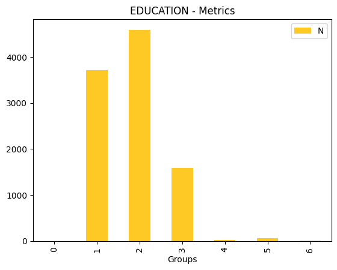
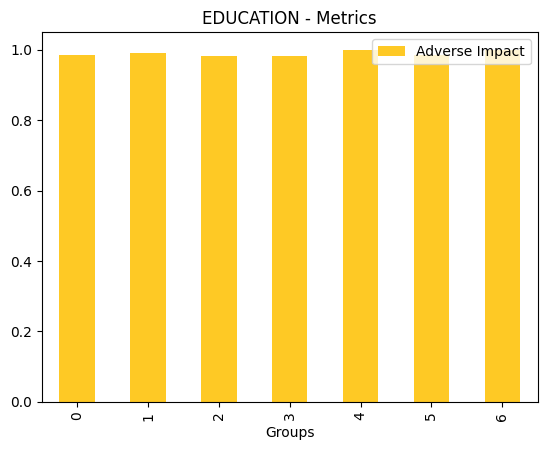
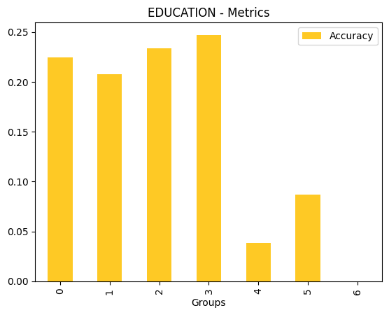
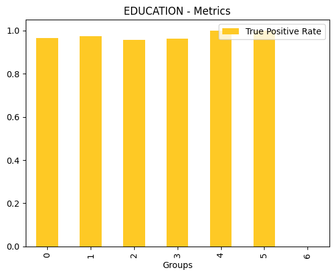
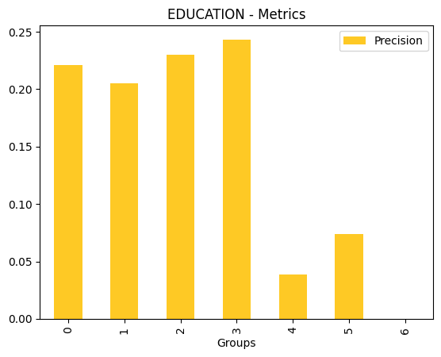
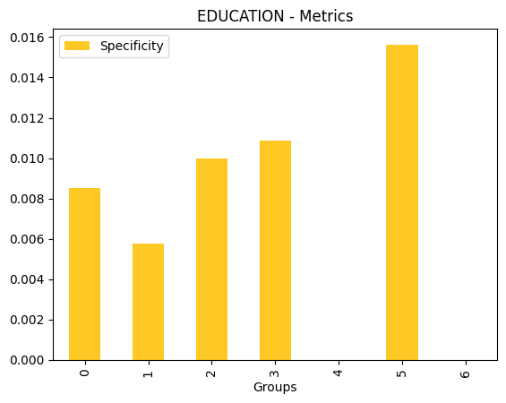
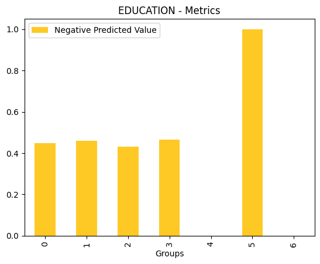
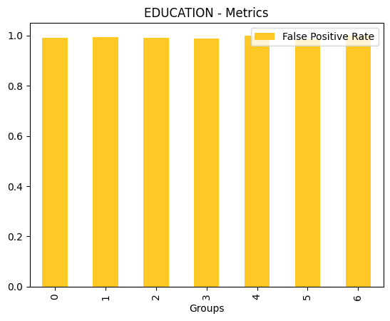
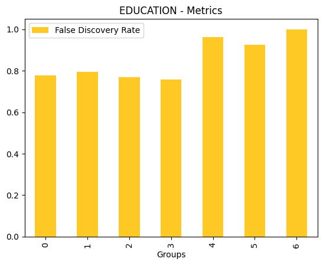
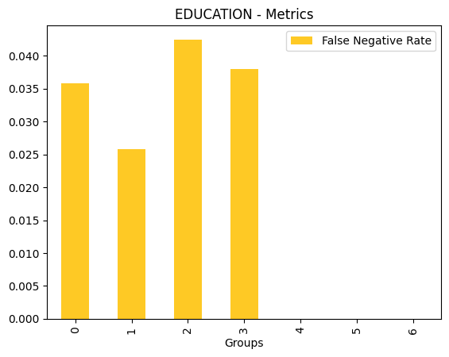
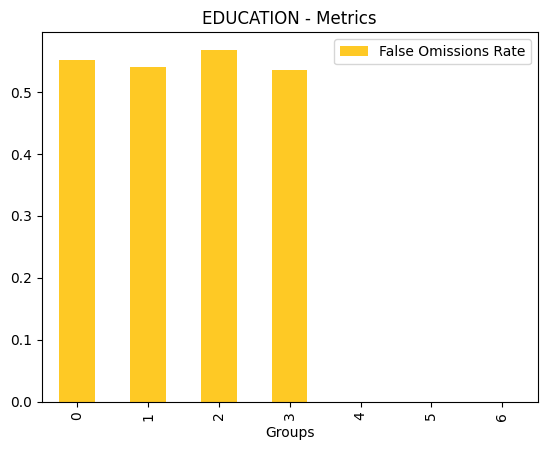
[16]:
[]
[17]:
# Only plot metric for "Specificity"
result.plot(feature_name="PAY_0", metrics_of_interest="Specificity")
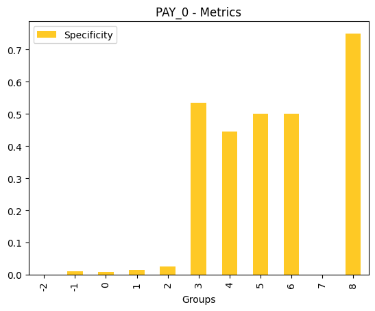
[17]:
[]
[18]:
# Only plot metrics for "N", "Adverse Impact" and "True Positive Rate"
result.plot(feature_name="PAY_0", metrics_of_interest=["N", "Adverse Impact", "True Positive Rate"])
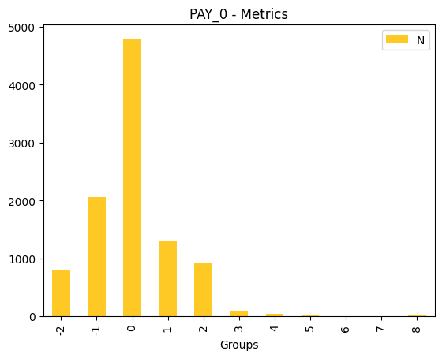
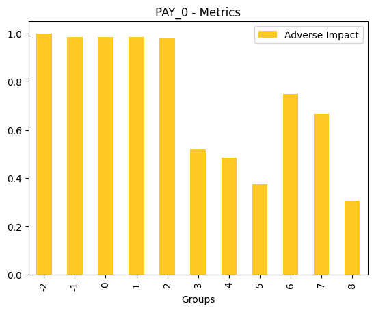
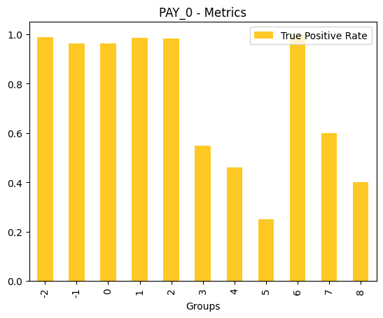
[18]:
[]
Save the explainer log and data
[19]:
# save the explainer log
result.log(path="./dia-demo.log")
[20]:
!head dia-demo.log
[21]:
# save the explainer data
result.zip(file_path="./dia-demo-archive.zip")
[22]:
!unzip -l dia-demo-archive.zip
Archive: dia-demo-archive.zip
Length Date Time Name
--------- ---------- ----- ----
3988 2026-01-29 16:02 explainer_h2o_sonar_explainers_dia_explainer_DiaExplainer_2dc47eb0-225e-42cd-8b6a-b769177e05be/result_descriptor.json
117 2026-01-29 16:01 explainer_h2o_sonar_explainers_dia_explainer_DiaExplainer_2dc47eb0-225e-42cd-8b6a-b769177e05be/global_disparate_impact_analysis/text_plain.meta
19 2026-01-29 16:01 explainer_h2o_sonar_explainers_dia_explainer_DiaExplainer_2dc47eb0-225e-42cd-8b6a-b769177e05be/global_disparate_impact_analysis/text_plain/explanation.txt
2 2026-01-29 16:02 explainer_h2o_sonar_explainers_dia_explainer_DiaExplainer_2dc47eb0-225e-42cd-8b6a-b769177e05be/problems/problems_and_actions.json
110 2026-01-29 16:01 explainer_h2o_sonar_explainers_dia_explainer_DiaExplainer_2dc47eb0-225e-42cd-8b6a-b769177e05be/global_html_fragment/text_html.meta
15297 2026-01-29 16:01 explainer_h2o_sonar_explainers_dia_explainer_DiaExplainer_2dc47eb0-225e-42cd-8b6a-b769177e05be/global_html_fragment/text_html/dia-0-false_discovery_rate.png
14691 2026-01-29 16:01 explainer_h2o_sonar_explainers_dia_explainer_DiaExplainer_2dc47eb0-225e-42cd-8b6a-b769177e05be/global_html_fragment/text_html/dia-0-specificity.png
15195 2026-01-29 16:02 explainer_h2o_sonar_explainers_dia_explainer_DiaExplainer_2dc47eb0-225e-42cd-8b6a-b769177e05be/global_html_fragment/text_html/dia-7-false_omissions_rate.png
11805 2026-01-29 16:01 explainer_h2o_sonar_explainers_dia_explainer_DiaExplainer_2dc47eb0-225e-42cd-8b6a-b769177e05be/global_html_fragment/text_html/dia-2-precision.png
14412 2026-01-29 16:01 explainer_h2o_sonar_explainers_dia_explainer_DiaExplainer_2dc47eb0-225e-42cd-8b6a-b769177e05be/global_html_fragment/text_html/dia-3-n.png
15132 2026-01-29 16:01 explainer_h2o_sonar_explainers_dia_explainer_DiaExplainer_2dc47eb0-225e-42cd-8b6a-b769177e05be/global_html_fragment/text_html/dia-4-false_negative_rate.png
15008 2026-01-29 16:01 explainer_h2o_sonar_explainers_dia_explainer_DiaExplainer_2dc47eb0-225e-42cd-8b6a-b769177e05be/global_html_fragment/text_html/dia-3-true_positive_rate.png
15456 2026-01-29 16:01 explainer_h2o_sonar_explainers_dia_explainer_DiaExplainer_2dc47eb0-225e-42cd-8b6a-b769177e05be/global_html_fragment/text_html/dia-5-accuracy.png
15423 2026-01-29 16:01 explainer_h2o_sonar_explainers_dia_explainer_DiaExplainer_2dc47eb0-225e-42cd-8b6a-b769177e05be/global_html_fragment/text_html/dia-5-precision.png
14760 2026-01-29 16:02 explainer_h2o_sonar_explainers_dia_explainer_DiaExplainer_2dc47eb0-225e-42cd-8b6a-b769177e05be/global_html_fragment/text_html/dia-8-true_positive_rate.png
14829 2026-01-29 16:01 explainer_h2o_sonar_explainers_dia_explainer_DiaExplainer_2dc47eb0-225e-42cd-8b6a-b769177e05be/global_html_fragment/text_html/dia-0-true_positive_rate.png
13212 2026-01-29 16:01 explainer_h2o_sonar_explainers_dia_explainer_DiaExplainer_2dc47eb0-225e-42cd-8b6a-b769177e05be/global_html_fragment/text_html/dia-2-false_positive_rate.png
15257 2026-01-29 16:01 explainer_h2o_sonar_explainers_dia_explainer_DiaExplainer_2dc47eb0-225e-42cd-8b6a-b769177e05be/global_html_fragment/text_html/dia-3-false_omissions_rate.png
14901 2026-01-29 16:01 explainer_h2o_sonar_explainers_dia_explainer_DiaExplainer_2dc47eb0-225e-42cd-8b6a-b769177e05be/global_html_fragment/text_html/dia-1-true_positive_rate.png
12812 2026-01-29 16:01 explainer_h2o_sonar_explainers_dia_explainer_DiaExplainer_2dc47eb0-225e-42cd-8b6a-b769177e05be/global_html_fragment/text_html/dia-2-true_positive_rate.png
14404 2026-01-29 16:01 explainer_h2o_sonar_explainers_dia_explainer_DiaExplainer_2dc47eb0-225e-42cd-8b6a-b769177e05be/global_html_fragment/text_html/dia-6-n.png
14167 2026-01-29 16:01 explainer_h2o_sonar_explainers_dia_explainer_DiaExplainer_2dc47eb0-225e-42cd-8b6a-b769177e05be/global_html_fragment/text_html/dia-1-specificity.png
15684 2026-01-29 16:01 explainer_h2o_sonar_explainers_dia_explainer_DiaExplainer_2dc47eb0-225e-42cd-8b6a-b769177e05be/global_html_fragment/text_html/dia-6-false_omissions_rate.png
15118 2026-01-29 16:01 explainer_h2o_sonar_explainers_dia_explainer_DiaExplainer_2dc47eb0-225e-42cd-8b6a-b769177e05be/global_html_fragment/text_html/dia-5-false_positive_rate.png
15097 2026-01-29 16:01 explainer_h2o_sonar_explainers_dia_explainer_DiaExplainer_2dc47eb0-225e-42cd-8b6a-b769177e05be/global_html_fragment/text_html/dia-6-false_positive_rate.png
15736 2026-01-29 16:02 explainer_h2o_sonar_explainers_dia_explainer_DiaExplainer_2dc47eb0-225e-42cd-8b6a-b769177e05be/global_html_fragment/text_html/dia-8-negative_predicted_value.png
14679 2026-01-29 16:01 explainer_h2o_sonar_explainers_dia_explainer_DiaExplainer_2dc47eb0-225e-42cd-8b6a-b769177e05be/global_html_fragment/text_html/dia-0-adverse_impact.png
14369 2026-01-29 16:01 explainer_h2o_sonar_explainers_dia_explainer_DiaExplainer_2dc47eb0-225e-42cd-8b6a-b769177e05be/global_html_fragment/text_html/dia-2-specificity.png
14472 2026-01-29 16:01 explainer_h2o_sonar_explainers_dia_explainer_DiaExplainer_2dc47eb0-225e-42cd-8b6a-b769177e05be/global_html_fragment/text_html/dia-4-true_positive_rate.png
14754 2026-01-29 16:01 explainer_h2o_sonar_explainers_dia_explainer_DiaExplainer_2dc47eb0-225e-42cd-8b6a-b769177e05be/global_html_fragment/text_html/dia-5-true_positive_rate.png
13556 2026-01-29 16:01 explainer_h2o_sonar_explainers_dia_explainer_DiaExplainer_2dc47eb0-225e-42cd-8b6a-b769177e05be/global_html_fragment/text_html/dia-7-n.png
16319 2026-01-29 16:01 explainer_h2o_sonar_explainers_dia_explainer_DiaExplainer_2dc47eb0-225e-42cd-8b6a-b769177e05be/global_html_fragment/text_html/dia-3-false_negative_rate.png
15996 2026-01-29 16:01 explainer_h2o_sonar_explainers_dia_explainer_DiaExplainer_2dc47eb0-225e-42cd-8b6a-b769177e05be/global_html_fragment/text_html/dia-4-specificity.png
15064 2026-01-29 16:01 explainer_h2o_sonar_explainers_dia_explainer_DiaExplainer_2dc47eb0-225e-42cd-8b6a-b769177e05be/global_html_fragment/text_html/dia-2-false_discovery_rate.png
13692 2026-01-29 16:01 explainer_h2o_sonar_explainers_dia_explainer_DiaExplainer_2dc47eb0-225e-42cd-8b6a-b769177e05be/global_html_fragment/text_html/dia-2-negative_predicted_value.png
13462 2026-01-29 16:01 explainer_h2o_sonar_explainers_dia_explainer_DiaExplainer_2dc47eb0-225e-42cd-8b6a-b769177e05be/global_html_fragment/text_html/dia-2-false_negative_rate.png
15723 2026-01-29 16:01 explainer_h2o_sonar_explainers_dia_explainer_DiaExplainer_2dc47eb0-225e-42cd-8b6a-b769177e05be/global_html_fragment/text_html/dia-5-negative_predicted_value.png
14267 2026-01-29 16:02 explainer_h2o_sonar_explainers_dia_explainer_DiaExplainer_2dc47eb0-225e-42cd-8b6a-b769177e05be/global_html_fragment/text_html/dia-8-specificity.png
14324 2026-01-29 16:01 explainer_h2o_sonar_explainers_dia_explainer_DiaExplainer_2dc47eb0-225e-42cd-8b6a-b769177e05be/global_html_fragment/text_html/dia-4-accuracy.png
29111 2026-01-29 16:02 explainer_h2o_sonar_explainers_dia_explainer_DiaExplainer_2dc47eb0-225e-42cd-8b6a-b769177e05be/global_html_fragment/text_html/explanation.html
14997 2026-01-29 16:01 explainer_h2o_sonar_explainers_dia_explainer_DiaExplainer_2dc47eb0-225e-42cd-8b6a-b769177e05be/global_html_fragment/text_html/dia-5-false_negative_rate.png
14856 2026-01-29 16:01 explainer_h2o_sonar_explainers_dia_explainer_DiaExplainer_2dc47eb0-225e-42cd-8b6a-b769177e05be/global_html_fragment/text_html/dia-7-adverse_impact.png
14795 2026-01-29 16:01 explainer_h2o_sonar_explainers_dia_explainer_DiaExplainer_2dc47eb0-225e-42cd-8b6a-b769177e05be/global_html_fragment/text_html/dia-6-true_positive_rate.png
17011 2026-01-29 16:01 explainer_h2o_sonar_explainers_dia_explainer_DiaExplainer_2dc47eb0-225e-42cd-8b6a-b769177e05be/global_html_fragment/text_html/dia-1-false_discovery_rate.png
14870 2026-01-29 16:01 explainer_h2o_sonar_explainers_dia_explainer_DiaExplainer_2dc47eb0-225e-42cd-8b6a-b769177e05be/global_html_fragment/text_html/dia-4-false_positive_rate.png
15317 2026-01-29 16:01 explainer_h2o_sonar_explainers_dia_explainer_DiaExplainer_2dc47eb0-225e-42cd-8b6a-b769177e05be/global_html_fragment/text_html/dia-1-false_positive_rate.png
13481 2026-01-29 16:01 explainer_h2o_sonar_explainers_dia_explainer_DiaExplainer_2dc47eb0-225e-42cd-8b6a-b769177e05be/global_html_fragment/text_html/dia-4-precision.png
15341 2026-01-29 16:01 explainer_h2o_sonar_explainers_dia_explainer_DiaExplainer_2dc47eb0-225e-42cd-8b6a-b769177e05be/global_html_fragment/text_html/dia-6-false_discovery_rate.png
14723 2026-01-29 16:01 explainer_h2o_sonar_explainers_dia_explainer_DiaExplainer_2dc47eb0-225e-42cd-8b6a-b769177e05be/global_html_fragment/text_html/dia-7-precision.png
15039 2026-01-29 16:01 explainer_h2o_sonar_explainers_dia_explainer_DiaExplainer_2dc47eb0-225e-42cd-8b6a-b769177e05be/global_html_fragment/text_html/dia-3-false_discovery_rate.png
15311 2026-01-29 16:01 explainer_h2o_sonar_explainers_dia_explainer_DiaExplainer_2dc47eb0-225e-42cd-8b6a-b769177e05be/global_html_fragment/text_html/dia-3-false_positive_rate.png
13760 2026-01-29 16:01 explainer_h2o_sonar_explainers_dia_explainer_DiaExplainer_2dc47eb0-225e-42cd-8b6a-b769177e05be/global_html_fragment/text_html/dia-2-false_omissions_rate.png
14947 2026-01-29 16:01 explainer_h2o_sonar_explainers_dia_explainer_DiaExplainer_2dc47eb0-225e-42cd-8b6a-b769177e05be/global_html_fragment/text_html/dia-7-true_positive_rate.png
15800 2026-01-29 16:01 explainer_h2o_sonar_explainers_dia_explainer_DiaExplainer_2dc47eb0-225e-42cd-8b6a-b769177e05be/global_html_fragment/text_html/dia-1-negative_predicted_value.png
15282 2026-01-29 16:02 explainer_h2o_sonar_explainers_dia_explainer_DiaExplainer_2dc47eb0-225e-42cd-8b6a-b769177e05be/global_html_fragment/text_html/dia-7-false_discovery_rate.png
16098 2026-01-29 16:01 explainer_h2o_sonar_explainers_dia_explainer_DiaExplainer_2dc47eb0-225e-42cd-8b6a-b769177e05be/global_html_fragment/text_html/dia-5-false_omissions_rate.png
15637 2026-01-29 16:02 explainer_h2o_sonar_explainers_dia_explainer_DiaExplainer_2dc47eb0-225e-42cd-8b6a-b769177e05be/global_html_fragment/text_html/dia-8-false_negative_rate.png
14337 2026-01-29 16:01 explainer_h2o_sonar_explainers_dia_explainer_DiaExplainer_2dc47eb0-225e-42cd-8b6a-b769177e05be/global_html_fragment/text_html/dia-5-n.png
13925 2026-01-29 16:01 explainer_h2o_sonar_explainers_dia_explainer_DiaExplainer_2dc47eb0-225e-42cd-8b6a-b769177e05be/global_html_fragment/text_html/dia-4-n.png
13990 2026-01-29 16:01 explainer_h2o_sonar_explainers_dia_explainer_DiaExplainer_2dc47eb0-225e-42cd-8b6a-b769177e05be/global_html_fragment/text_html/dia-1-accuracy.png
12752 2026-01-29 16:01 explainer_h2o_sonar_explainers_dia_explainer_DiaExplainer_2dc47eb0-225e-42cd-8b6a-b769177e05be/global_html_fragment/text_html/dia-2-adverse_impact.png
15731 2026-01-29 16:01 explainer_h2o_sonar_explainers_dia_explainer_DiaExplainer_2dc47eb0-225e-42cd-8b6a-b769177e05be/global_html_fragment/text_html/dia-0-negative_predicted_value.png
15216 2026-01-29 16:01 explainer_h2o_sonar_explainers_dia_explainer_DiaExplainer_2dc47eb0-225e-42cd-8b6a-b769177e05be/global_html_fragment/text_html/dia-0-false_positive_rate.png
13905 2026-01-29 16:02 explainer_h2o_sonar_explainers_dia_explainer_DiaExplainer_2dc47eb0-225e-42cd-8b6a-b769177e05be/global_html_fragment/text_html/dia-8-accuracy.png
14749 2026-01-29 16:01 explainer_h2o_sonar_explainers_dia_explainer_DiaExplainer_2dc47eb0-225e-42cd-8b6a-b769177e05be/global_html_fragment/text_html/dia-5-adverse_impact.png
14209 2026-01-29 16:01 explainer_h2o_sonar_explainers_dia_explainer_DiaExplainer_2dc47eb0-225e-42cd-8b6a-b769177e05be/global_html_fragment/text_html/dia-6-specificity.png
15075 2026-01-29 16:02 explainer_h2o_sonar_explainers_dia_explainer_DiaExplainer_2dc47eb0-225e-42cd-8b6a-b769177e05be/global_html_fragment/text_html/dia-8-false_positive_rate.png
13832 2026-01-29 16:01 explainer_h2o_sonar_explainers_dia_explainer_DiaExplainer_2dc47eb0-225e-42cd-8b6a-b769177e05be/global_html_fragment/text_html/dia-6-precision.png
13947 2026-01-29 16:01 explainer_h2o_sonar_explainers_dia_explainer_DiaExplainer_2dc47eb0-225e-42cd-8b6a-b769177e05be/global_html_fragment/text_html/dia-6-accuracy.png
20218 2026-01-29 16:02 explainer_h2o_sonar_explainers_dia_explainer_DiaExplainer_2dc47eb0-225e-42cd-8b6a-b769177e05be/global_html_fragment/text_html/dia-7-false_negative_rate.png
15723 2026-01-29 16:02 explainer_h2o_sonar_explainers_dia_explainer_DiaExplainer_2dc47eb0-225e-42cd-8b6a-b769177e05be/global_html_fragment/text_html/dia-7-negative_predicted_value.png
15289 2026-01-29 16:01 explainer_h2o_sonar_explainers_dia_explainer_DiaExplainer_2dc47eb0-225e-42cd-8b6a-b769177e05be/global_html_fragment/text_html/dia-3-specificity.png
15339 2026-01-29 16:01 explainer_h2o_sonar_explainers_dia_explainer_DiaExplainer_2dc47eb0-225e-42cd-8b6a-b769177e05be/global_html_fragment/text_html/dia-1-false_negative_rate.png
14806 2026-01-29 16:01 explainer_h2o_sonar_explainers_dia_explainer_DiaExplainer_2dc47eb0-225e-42cd-8b6a-b769177e05be/global_html_fragment/text_html/dia-6-adverse_impact.png
19006 2026-01-29 16:02 explainer_h2o_sonar_explainers_dia_explainer_DiaExplainer_2dc47eb0-225e-42cd-8b6a-b769177e05be/global_html_fragment/text_html/dia-7-specificity.png
15136 2026-01-29 16:01 explainer_h2o_sonar_explainers_dia_explainer_DiaExplainer_2dc47eb0-225e-42cd-8b6a-b769177e05be/global_html_fragment/text_html/dia-4-negative_predicted_value.png
13787 2026-01-29 16:01 explainer_h2o_sonar_explainers_dia_explainer_DiaExplainer_2dc47eb0-225e-42cd-8b6a-b769177e05be/global_html_fragment/text_html/dia-0-precision.png
15669 2026-01-29 16:01 explainer_h2o_sonar_explainers_dia_explainer_DiaExplainer_2dc47eb0-225e-42cd-8b6a-b769177e05be/global_html_fragment/text_html/dia-6-false_negative_rate.png
15312 2026-01-29 16:01 explainer_h2o_sonar_explainers_dia_explainer_DiaExplainer_2dc47eb0-225e-42cd-8b6a-b769177e05be/global_html_fragment/text_html/dia-5-false_discovery_rate.png
15316 2026-01-29 16:02 explainer_h2o_sonar_explainers_dia_explainer_DiaExplainer_2dc47eb0-225e-42cd-8b6a-b769177e05be/global_html_fragment/text_html/dia-8-false_discovery_rate.png
14886 2026-01-29 16:01 explainer_h2o_sonar_explainers_dia_explainer_DiaExplainer_2dc47eb0-225e-42cd-8b6a-b769177e05be/global_html_fragment/text_html/dia-7-accuracy.png
15276 2026-01-29 16:02 explainer_h2o_sonar_explainers_dia_explainer_DiaExplainer_2dc47eb0-225e-42cd-8b6a-b769177e05be/global_html_fragment/text_html/dia-7-false_positive_rate.png
14797 2026-01-29 16:01 explainer_h2o_sonar_explainers_dia_explainer_DiaExplainer_2dc47eb0-225e-42cd-8b6a-b769177e05be/global_html_fragment/text_html/dia-3-adverse_impact.png
14709 2026-01-29 16:02 explainer_h2o_sonar_explainers_dia_explainer_DiaExplainer_2dc47eb0-225e-42cd-8b6a-b769177e05be/global_html_fragment/text_html/dia-8-adverse_impact.png
14398 2026-01-29 16:01 explainer_h2o_sonar_explainers_dia_explainer_DiaExplainer_2dc47eb0-225e-42cd-8b6a-b769177e05be/global_html_fragment/text_html/dia-0-n.png
13230 2026-01-29 16:01 explainer_h2o_sonar_explainers_dia_explainer_DiaExplainer_2dc47eb0-225e-42cd-8b6a-b769177e05be/global_html_fragment/text_html/dia-2-n.png
14787 2026-01-29 16:01 explainer_h2o_sonar_explainers_dia_explainer_DiaExplainer_2dc47eb0-225e-42cd-8b6a-b769177e05be/global_html_fragment/text_html/dia-1-adverse_impact.png
13877 2026-01-29 16:01 explainer_h2o_sonar_explainers_dia_explainer_DiaExplainer_2dc47eb0-225e-42cd-8b6a-b769177e05be/global_html_fragment/text_html/dia-1-precision.png
14400 2026-01-29 16:01 explainer_h2o_sonar_explainers_dia_explainer_DiaExplainer_2dc47eb0-225e-42cd-8b6a-b769177e05be/global_html_fragment/text_html/dia-4-adverse_impact.png
15738 2026-01-29 16:01 explainer_h2o_sonar_explainers_dia_explainer_DiaExplainer_2dc47eb0-225e-42cd-8b6a-b769177e05be/global_html_fragment/text_html/dia-6-negative_predicted_value.png
17518 2026-01-29 16:01 explainer_h2o_sonar_explainers_dia_explainer_DiaExplainer_2dc47eb0-225e-42cd-8b6a-b769177e05be/global_html_fragment/text_html/dia-0-false_negative_rate.png
15085 2026-01-29 16:01 explainer_h2o_sonar_explainers_dia_explainer_DiaExplainer_2dc47eb0-225e-42cd-8b6a-b769177e05be/global_html_fragment/text_html/dia-3-accuracy.png
14434 2026-01-29 16:01 explainer_h2o_sonar_explainers_dia_explainer_DiaExplainer_2dc47eb0-225e-42cd-8b6a-b769177e05be/global_html_fragment/text_html/dia-1-n.png
15812 2026-01-29 16:01 explainer_h2o_sonar_explainers_dia_explainer_DiaExplainer_2dc47eb0-225e-42cd-8b6a-b769177e05be/global_html_fragment/text_html/dia-1-false_omissions_rate.png
14905 2026-01-29 16:01 explainer_h2o_sonar_explainers_dia_explainer_DiaExplainer_2dc47eb0-225e-42cd-8b6a-b769177e05be/global_html_fragment/text_html/dia-3-precision.png
15802 2026-01-29 16:01 explainer_h2o_sonar_explainers_dia_explainer_DiaExplainer_2dc47eb0-225e-42cd-8b6a-b769177e05be/global_html_fragment/text_html/dia-5-specificity.png
13803 2026-01-29 16:02 explainer_h2o_sonar_explainers_dia_explainer_DiaExplainer_2dc47eb0-225e-42cd-8b6a-b769177e05be/global_html_fragment/text_html/dia-8-precision.png
12658 2026-01-29 16:01 explainer_h2o_sonar_explainers_dia_explainer_DiaExplainer_2dc47eb0-225e-42cd-8b6a-b769177e05be/global_html_fragment/text_html/dia-2-accuracy.png
13918 2026-01-29 16:01 explainer_h2o_sonar_explainers_dia_explainer_DiaExplainer_2dc47eb0-225e-42cd-8b6a-b769177e05be/global_html_fragment/text_html/dia-0-accuracy.png
16628 2026-01-29 16:01 explainer_h2o_sonar_explainers_dia_explainer_DiaExplainer_2dc47eb0-225e-42cd-8b6a-b769177e05be/global_html_fragment/text_html/dia-4-false_discovery_rate.png
14407 2026-01-29 16:02 explainer_h2o_sonar_explainers_dia_explainer_DiaExplainer_2dc47eb0-225e-42cd-8b6a-b769177e05be/global_html_fragment/text_html/dia-8-n.png
15816 2026-01-29 16:01 explainer_h2o_sonar_explainers_dia_explainer_DiaExplainer_2dc47eb0-225e-42cd-8b6a-b769177e05be/global_html_fragment/text_html/dia-3-negative_predicted_value.png
14744 2026-01-29 16:01 explainer_h2o_sonar_explainers_dia_explainer_DiaExplainer_2dc47eb0-225e-42cd-8b6a-b769177e05be/global_html_fragment/text_html/dia-4-false_omissions_rate.png
16209 2026-01-29 16:01 explainer_h2o_sonar_explainers_dia_explainer_DiaExplainer_2dc47eb0-225e-42cd-8b6a-b769177e05be/global_html_fragment/text_html/dia-0-false_omissions_rate.png
15166 2026-01-29 16:02 explainer_h2o_sonar_explainers_dia_explainer_DiaExplainer_2dc47eb0-225e-42cd-8b6a-b769177e05be/global_html_fragment/text_html/dia-8-false_omissions_rate.png
0 2026-01-29 16:01 explainer_h2o_sonar_explainers_dia_explainer_DiaExplainer_2dc47eb0-225e-42cd-8b6a-b769177e05be/log/explainer_run_2dc47eb0-225e-42cd-8b6a-b769177e05be.log
4076 2026-01-29 16:01 explainer_h2o_sonar_explainers_dia_explainer_DiaExplainer_2dc47eb0-225e-42cd-8b6a-b769177e05be/work/dia_entity.json
2152 2026-01-29 16:01 explainer_h2o_sonar_explainers_dia_explainer_DiaExplainer_2dc47eb0-225e-42cd-8b6a-b769177e05be/work/PAY_5/metrics.jay
2208 2026-01-29 16:01 explainer_h2o_sonar_explainers_dia_explainer_DiaExplainer_2dc47eb0-225e-42cd-8b6a-b769177e05be/work/PAY_5/4/parity.jay
824 2026-01-29 16:01 explainer_h2o_sonar_explainers_dia_explainer_DiaExplainer_2dc47eb0-225e-42cd-8b6a-b769177e05be/work/PAY_5/4/me_smd.jay
2648 2026-01-29 16:01 explainer_h2o_sonar_explainers_dia_explainer_DiaExplainer_2dc47eb0-225e-42cd-8b6a-b769177e05be/work/PAY_5/4/disparity.jay
304 2026-01-29 16:01 explainer_h2o_sonar_explainers_dia_explainer_DiaExplainer_2dc47eb0-225e-42cd-8b6a-b769177e05be/work/PAY_5/4/cm.jay
2208 2026-01-29 16:01 explainer_h2o_sonar_explainers_dia_explainer_DiaExplainer_2dc47eb0-225e-42cd-8b6a-b769177e05be/work/PAY_5/2/parity.jay
824 2026-01-29 16:01 explainer_h2o_sonar_explainers_dia_explainer_DiaExplainer_2dc47eb0-225e-42cd-8b6a-b769177e05be/work/PAY_5/2/me_smd.jay
2648 2026-01-29 16:01 explainer_h2o_sonar_explainers_dia_explainer_DiaExplainer_2dc47eb0-225e-42cd-8b6a-b769177e05be/work/PAY_5/2/disparity.jay
304 2026-01-29 16:01 explainer_h2o_sonar_explainers_dia_explainer_DiaExplainer_2dc47eb0-225e-42cd-8b6a-b769177e05be/work/PAY_5/2/cm.jay
2208 2026-01-29 16:01 explainer_h2o_sonar_explainers_dia_explainer_DiaExplainer_2dc47eb0-225e-42cd-8b6a-b769177e05be/work/PAY_5/5/parity.jay
824 2026-01-29 16:01 explainer_h2o_sonar_explainers_dia_explainer_DiaExplainer_2dc47eb0-225e-42cd-8b6a-b769177e05be/work/PAY_5/5/me_smd.jay
2648 2026-01-29 16:01 explainer_h2o_sonar_explainers_dia_explainer_DiaExplainer_2dc47eb0-225e-42cd-8b6a-b769177e05be/work/PAY_5/5/disparity.jay
304 2026-01-29 16:01 explainer_h2o_sonar_explainers_dia_explainer_DiaExplainer_2dc47eb0-225e-42cd-8b6a-b769177e05be/work/PAY_5/5/cm.jay
2208 2026-01-29 16:01 explainer_h2o_sonar_explainers_dia_explainer_DiaExplainer_2dc47eb0-225e-42cd-8b6a-b769177e05be/work/PAY_5/0/parity.jay
824 2026-01-29 16:01 explainer_h2o_sonar_explainers_dia_explainer_DiaExplainer_2dc47eb0-225e-42cd-8b6a-b769177e05be/work/PAY_5/0/me_smd.jay
2648 2026-01-29 16:01 explainer_h2o_sonar_explainers_dia_explainer_DiaExplainer_2dc47eb0-225e-42cd-8b6a-b769177e05be/work/PAY_5/0/disparity.jay
304 2026-01-29 16:01 explainer_h2o_sonar_explainers_dia_explainer_DiaExplainer_2dc47eb0-225e-42cd-8b6a-b769177e05be/work/PAY_5/0/cm.jay
2208 2026-01-29 16:01 explainer_h2o_sonar_explainers_dia_explainer_DiaExplainer_2dc47eb0-225e-42cd-8b6a-b769177e05be/work/PAY_5/8/parity.jay
824 2026-01-29 16:01 explainer_h2o_sonar_explainers_dia_explainer_DiaExplainer_2dc47eb0-225e-42cd-8b6a-b769177e05be/work/PAY_5/8/me_smd.jay
2648 2026-01-29 16:01 explainer_h2o_sonar_explainers_dia_explainer_DiaExplainer_2dc47eb0-225e-42cd-8b6a-b769177e05be/work/PAY_5/8/disparity.jay
304 2026-01-29 16:01 explainer_h2o_sonar_explainers_dia_explainer_DiaExplainer_2dc47eb0-225e-42cd-8b6a-b769177e05be/work/PAY_5/8/cm.jay
2208 2026-01-29 16:01 explainer_h2o_sonar_explainers_dia_explainer_DiaExplainer_2dc47eb0-225e-42cd-8b6a-b769177e05be/work/PAY_5/7/parity.jay
824 2026-01-29 16:01 explainer_h2o_sonar_explainers_dia_explainer_DiaExplainer_2dc47eb0-225e-42cd-8b6a-b769177e05be/work/PAY_5/7/me_smd.jay
2664 2026-01-29 16:01 explainer_h2o_sonar_explainers_dia_explainer_DiaExplainer_2dc47eb0-225e-42cd-8b6a-b769177e05be/work/PAY_5/7/disparity.jay
304 2026-01-29 16:01 explainer_h2o_sonar_explainers_dia_explainer_DiaExplainer_2dc47eb0-225e-42cd-8b6a-b769177e05be/work/PAY_5/7/cm.jay
2208 2026-01-29 16:01 explainer_h2o_sonar_explainers_dia_explainer_DiaExplainer_2dc47eb0-225e-42cd-8b6a-b769177e05be/work/PAY_5/1/parity.jay
824 2026-01-29 16:01 explainer_h2o_sonar_explainers_dia_explainer_DiaExplainer_2dc47eb0-225e-42cd-8b6a-b769177e05be/work/PAY_5/1/me_smd.jay
2648 2026-01-29 16:01 explainer_h2o_sonar_explainers_dia_explainer_DiaExplainer_2dc47eb0-225e-42cd-8b6a-b769177e05be/work/PAY_5/1/disparity.jay
304 2026-01-29 16:01 explainer_h2o_sonar_explainers_dia_explainer_DiaExplainer_2dc47eb0-225e-42cd-8b6a-b769177e05be/work/PAY_5/1/cm.jay
2208 2026-01-29 16:01 explainer_h2o_sonar_explainers_dia_explainer_DiaExplainer_2dc47eb0-225e-42cd-8b6a-b769177e05be/work/PAY_5/6/parity.jay
824 2026-01-29 16:01 explainer_h2o_sonar_explainers_dia_explainer_DiaExplainer_2dc47eb0-225e-42cd-8b6a-b769177e05be/work/PAY_5/6/me_smd.jay
2648 2026-01-29 16:01 explainer_h2o_sonar_explainers_dia_explainer_DiaExplainer_2dc47eb0-225e-42cd-8b6a-b769177e05be/work/PAY_5/6/disparity.jay
304 2026-01-29 16:01 explainer_h2o_sonar_explainers_dia_explainer_DiaExplainer_2dc47eb0-225e-42cd-8b6a-b769177e05be/work/PAY_5/6/cm.jay
2208 2026-01-29 16:01 explainer_h2o_sonar_explainers_dia_explainer_DiaExplainer_2dc47eb0-225e-42cd-8b6a-b769177e05be/work/PAY_5/9/parity.jay
824 2026-01-29 16:01 explainer_h2o_sonar_explainers_dia_explainer_DiaExplainer_2dc47eb0-225e-42cd-8b6a-b769177e05be/work/PAY_5/9/me_smd.jay
2656 2026-01-29 16:01 explainer_h2o_sonar_explainers_dia_explainer_DiaExplainer_2dc47eb0-225e-42cd-8b6a-b769177e05be/work/PAY_5/9/disparity.jay
304 2026-01-29 16:01 explainer_h2o_sonar_explainers_dia_explainer_DiaExplainer_2dc47eb0-225e-42cd-8b6a-b769177e05be/work/PAY_5/9/cm.jay
2208 2026-01-29 16:01 explainer_h2o_sonar_explainers_dia_explainer_DiaExplainer_2dc47eb0-225e-42cd-8b6a-b769177e05be/work/PAY_5/3/parity.jay
824 2026-01-29 16:01 explainer_h2o_sonar_explainers_dia_explainer_DiaExplainer_2dc47eb0-225e-42cd-8b6a-b769177e05be/work/PAY_5/3/me_smd.jay
2648 2026-01-29 16:01 explainer_h2o_sonar_explainers_dia_explainer_DiaExplainer_2dc47eb0-225e-42cd-8b6a-b769177e05be/work/PAY_5/3/disparity.jay
304 2026-01-29 16:01 explainer_h2o_sonar_explainers_dia_explainer_DiaExplainer_2dc47eb0-225e-42cd-8b6a-b769177e05be/work/PAY_5/3/cm.jay
1392 2026-01-29 16:01 explainer_h2o_sonar_explainers_dia_explainer_DiaExplainer_2dc47eb0-225e-42cd-8b6a-b769177e05be/work/SEX/metrics.jay
1984 2026-01-29 16:01 explainer_h2o_sonar_explainers_dia_explainer_DiaExplainer_2dc47eb0-225e-42cd-8b6a-b769177e05be/work/SEX/0/parity.jay
600 2026-01-29 16:01 explainer_h2o_sonar_explainers_dia_explainer_DiaExplainer_2dc47eb0-225e-42cd-8b6a-b769177e05be/work/SEX/0/me_smd.jay
1792 2026-01-29 16:01 explainer_h2o_sonar_explainers_dia_explainer_DiaExplainer_2dc47eb0-225e-42cd-8b6a-b769177e05be/work/SEX/0/disparity.jay
304 2026-01-29 16:01 explainer_h2o_sonar_explainers_dia_explainer_DiaExplainer_2dc47eb0-225e-42cd-8b6a-b769177e05be/work/SEX/0/cm.jay
1984 2026-01-29 16:01 explainer_h2o_sonar_explainers_dia_explainer_DiaExplainer_2dc47eb0-225e-42cd-8b6a-b769177e05be/work/SEX/1/parity.jay
600 2026-01-29 16:01 explainer_h2o_sonar_explainers_dia_explainer_DiaExplainer_2dc47eb0-225e-42cd-8b6a-b769177e05be/work/SEX/1/me_smd.jay
1792 2026-01-29 16:01 explainer_h2o_sonar_explainers_dia_explainer_DiaExplainer_2dc47eb0-225e-42cd-8b6a-b769177e05be/work/SEX/1/disparity.jay
304 2026-01-29 16:01 explainer_h2o_sonar_explainers_dia_explainer_DiaExplainer_2dc47eb0-225e-42cd-8b6a-b769177e05be/work/SEX/1/cm.jay
2056 2026-01-29 16:01 explainer_h2o_sonar_explainers_dia_explainer_DiaExplainer_2dc47eb0-225e-42cd-8b6a-b769177e05be/work/PAY_6/metrics.jay
2208 2026-01-29 16:01 explainer_h2o_sonar_explainers_dia_explainer_DiaExplainer_2dc47eb0-225e-42cd-8b6a-b769177e05be/work/PAY_6/4/parity.jay
824 2026-01-29 16:01 explainer_h2o_sonar_explainers_dia_explainer_DiaExplainer_2dc47eb0-225e-42cd-8b6a-b769177e05be/work/PAY_6/4/me_smd.jay
2552 2026-01-29 16:01 explainer_h2o_sonar_explainers_dia_explainer_DiaExplainer_2dc47eb0-225e-42cd-8b6a-b769177e05be/work/PAY_6/4/disparity.jay
304 2026-01-29 16:01 explainer_h2o_sonar_explainers_dia_explainer_DiaExplainer_2dc47eb0-225e-42cd-8b6a-b769177e05be/work/PAY_6/4/cm.jay
2208 2026-01-29 16:01 explainer_h2o_sonar_explainers_dia_explainer_DiaExplainer_2dc47eb0-225e-42cd-8b6a-b769177e05be/work/PAY_6/2/parity.jay
824 2026-01-29 16:01 explainer_h2o_sonar_explainers_dia_explainer_DiaExplainer_2dc47eb0-225e-42cd-8b6a-b769177e05be/work/PAY_6/2/me_smd.jay
2552 2026-01-29 16:01 explainer_h2o_sonar_explainers_dia_explainer_DiaExplainer_2dc47eb0-225e-42cd-8b6a-b769177e05be/work/PAY_6/2/disparity.jay
304 2026-01-29 16:01 explainer_h2o_sonar_explainers_dia_explainer_DiaExplainer_2dc47eb0-225e-42cd-8b6a-b769177e05be/work/PAY_6/2/cm.jay
2208 2026-01-29 16:01 explainer_h2o_sonar_explainers_dia_explainer_DiaExplainer_2dc47eb0-225e-42cd-8b6a-b769177e05be/work/PAY_6/5/parity.jay
824 2026-01-29 16:01 explainer_h2o_sonar_explainers_dia_explainer_DiaExplainer_2dc47eb0-225e-42cd-8b6a-b769177e05be/work/PAY_6/5/me_smd.jay
2552 2026-01-29 16:01 explainer_h2o_sonar_explainers_dia_explainer_DiaExplainer_2dc47eb0-225e-42cd-8b6a-b769177e05be/work/PAY_6/5/disparity.jay
304 2026-01-29 16:01 explainer_h2o_sonar_explainers_dia_explainer_DiaExplainer_2dc47eb0-225e-42cd-8b6a-b769177e05be/work/PAY_6/5/cm.jay
2208 2026-01-29 16:01 explainer_h2o_sonar_explainers_dia_explainer_DiaExplainer_2dc47eb0-225e-42cd-8b6a-b769177e05be/work/PAY_6/0/parity.jay
824 2026-01-29 16:01 explainer_h2o_sonar_explainers_dia_explainer_DiaExplainer_2dc47eb0-225e-42cd-8b6a-b769177e05be/work/PAY_6/0/me_smd.jay
2552 2026-01-29 16:01 explainer_h2o_sonar_explainers_dia_explainer_DiaExplainer_2dc47eb0-225e-42cd-8b6a-b769177e05be/work/PAY_6/0/disparity.jay
304 2026-01-29 16:01 explainer_h2o_sonar_explainers_dia_explainer_DiaExplainer_2dc47eb0-225e-42cd-8b6a-b769177e05be/work/PAY_6/0/cm.jay
2208 2026-01-29 16:01 explainer_h2o_sonar_explainers_dia_explainer_DiaExplainer_2dc47eb0-225e-42cd-8b6a-b769177e05be/work/PAY_6/8/parity.jay
824 2026-01-29 16:01 explainer_h2o_sonar_explainers_dia_explainer_DiaExplainer_2dc47eb0-225e-42cd-8b6a-b769177e05be/work/PAY_6/8/me_smd.jay
2560 2026-01-29 16:01 explainer_h2o_sonar_explainers_dia_explainer_DiaExplainer_2dc47eb0-225e-42cd-8b6a-b769177e05be/work/PAY_6/8/disparity.jay
304 2026-01-29 16:01 explainer_h2o_sonar_explainers_dia_explainer_DiaExplainer_2dc47eb0-225e-42cd-8b6a-b769177e05be/work/PAY_6/8/cm.jay
2208 2026-01-29 16:01 explainer_h2o_sonar_explainers_dia_explainer_DiaExplainer_2dc47eb0-225e-42cd-8b6a-b769177e05be/work/PAY_6/7/parity.jay
824 2026-01-29 16:01 explainer_h2o_sonar_explainers_dia_explainer_DiaExplainer_2dc47eb0-225e-42cd-8b6a-b769177e05be/work/PAY_6/7/me_smd.jay
2560 2026-01-29 16:01 explainer_h2o_sonar_explainers_dia_explainer_DiaExplainer_2dc47eb0-225e-42cd-8b6a-b769177e05be/work/PAY_6/7/disparity.jay
304 2026-01-29 16:01 explainer_h2o_sonar_explainers_dia_explainer_DiaExplainer_2dc47eb0-225e-42cd-8b6a-b769177e05be/work/PAY_6/7/cm.jay
2208 2026-01-29 16:01 explainer_h2o_sonar_explainers_dia_explainer_DiaExplainer_2dc47eb0-225e-42cd-8b6a-b769177e05be/work/PAY_6/1/parity.jay
824 2026-01-29 16:01 explainer_h2o_sonar_explainers_dia_explainer_DiaExplainer_2dc47eb0-225e-42cd-8b6a-b769177e05be/work/PAY_6/1/me_smd.jay
2552 2026-01-29 16:01 explainer_h2o_sonar_explainers_dia_explainer_DiaExplainer_2dc47eb0-225e-42cd-8b6a-b769177e05be/work/PAY_6/1/disparity.jay
304 2026-01-29 16:01 explainer_h2o_sonar_explainers_dia_explainer_DiaExplainer_2dc47eb0-225e-42cd-8b6a-b769177e05be/work/PAY_6/1/cm.jay
2208 2026-01-29 16:01 explainer_h2o_sonar_explainers_dia_explainer_DiaExplainer_2dc47eb0-225e-42cd-8b6a-b769177e05be/work/PAY_6/6/parity.jay
824 2026-01-29 16:01 explainer_h2o_sonar_explainers_dia_explainer_DiaExplainer_2dc47eb0-225e-42cd-8b6a-b769177e05be/work/PAY_6/6/me_smd.jay
2560 2026-01-29 16:01 explainer_h2o_sonar_explainers_dia_explainer_DiaExplainer_2dc47eb0-225e-42cd-8b6a-b769177e05be/work/PAY_6/6/disparity.jay
304 2026-01-29 16:01 explainer_h2o_sonar_explainers_dia_explainer_DiaExplainer_2dc47eb0-225e-42cd-8b6a-b769177e05be/work/PAY_6/6/cm.jay
2208 2026-01-29 16:01 explainer_h2o_sonar_explainers_dia_explainer_DiaExplainer_2dc47eb0-225e-42cd-8b6a-b769177e05be/work/PAY_6/9/parity.jay
824 2026-01-29 16:01 explainer_h2o_sonar_explainers_dia_explainer_DiaExplainer_2dc47eb0-225e-42cd-8b6a-b769177e05be/work/PAY_6/9/me_smd.jay
2568 2026-01-29 16:01 explainer_h2o_sonar_explainers_dia_explainer_DiaExplainer_2dc47eb0-225e-42cd-8b6a-b769177e05be/work/PAY_6/9/disparity.jay
304 2026-01-29 16:01 explainer_h2o_sonar_explainers_dia_explainer_DiaExplainer_2dc47eb0-225e-42cd-8b6a-b769177e05be/work/PAY_6/9/cm.jay
2208 2026-01-29 16:01 explainer_h2o_sonar_explainers_dia_explainer_DiaExplainer_2dc47eb0-225e-42cd-8b6a-b769177e05be/work/PAY_6/3/parity.jay
824 2026-01-29 16:01 explainer_h2o_sonar_explainers_dia_explainer_DiaExplainer_2dc47eb0-225e-42cd-8b6a-b769177e05be/work/PAY_6/3/me_smd.jay
2552 2026-01-29 16:01 explainer_h2o_sonar_explainers_dia_explainer_DiaExplainer_2dc47eb0-225e-42cd-8b6a-b769177e05be/work/PAY_6/3/disparity.jay
304 2026-01-29 16:01 explainer_h2o_sonar_explainers_dia_explainer_DiaExplainer_2dc47eb0-225e-42cd-8b6a-b769177e05be/work/PAY_6/3/cm.jay
1504 2026-01-29 16:01 explainer_h2o_sonar_explainers_dia_explainer_DiaExplainer_2dc47eb0-225e-42cd-8b6a-b769177e05be/work/MARRIAGE/metrics.jay
2008 2026-01-29 16:01 explainer_h2o_sonar_explainers_dia_explainer_DiaExplainer_2dc47eb0-225e-42cd-8b6a-b769177e05be/work/MARRIAGE/2/parity.jay
656 2026-01-29 16:01 explainer_h2o_sonar_explainers_dia_explainer_DiaExplainer_2dc47eb0-225e-42cd-8b6a-b769177e05be/work/MARRIAGE/2/me_smd.jay
1928 2026-01-29 16:01 explainer_h2o_sonar_explainers_dia_explainer_DiaExplainer_2dc47eb0-225e-42cd-8b6a-b769177e05be/work/MARRIAGE/2/disparity.jay
304 2026-01-29 16:01 explainer_h2o_sonar_explainers_dia_explainer_DiaExplainer_2dc47eb0-225e-42cd-8b6a-b769177e05be/work/MARRIAGE/2/cm.jay
2008 2026-01-29 16:01 explainer_h2o_sonar_explainers_dia_explainer_DiaExplainer_2dc47eb0-225e-42cd-8b6a-b769177e05be/work/MARRIAGE/0/parity.jay
656 2026-01-29 16:01 explainer_h2o_sonar_explainers_dia_explainer_DiaExplainer_2dc47eb0-225e-42cd-8b6a-b769177e05be/work/MARRIAGE/0/me_smd.jay
1928 2026-01-29 16:01 explainer_h2o_sonar_explainers_dia_explainer_DiaExplainer_2dc47eb0-225e-42cd-8b6a-b769177e05be/work/MARRIAGE/0/disparity.jay
304 2026-01-29 16:01 explainer_h2o_sonar_explainers_dia_explainer_DiaExplainer_2dc47eb0-225e-42cd-8b6a-b769177e05be/work/MARRIAGE/0/cm.jay
2008 2026-01-29 16:01 explainer_h2o_sonar_explainers_dia_explainer_DiaExplainer_2dc47eb0-225e-42cd-8b6a-b769177e05be/work/MARRIAGE/1/parity.jay
656 2026-01-29 16:01 explainer_h2o_sonar_explainers_dia_explainer_DiaExplainer_2dc47eb0-225e-42cd-8b6a-b769177e05be/work/MARRIAGE/1/me_smd.jay
1928 2026-01-29 16:01 explainer_h2o_sonar_explainers_dia_explainer_DiaExplainer_2dc47eb0-225e-42cd-8b6a-b769177e05be/work/MARRIAGE/1/disparity.jay
304 2026-01-29 16:01 explainer_h2o_sonar_explainers_dia_explainer_DiaExplainer_2dc47eb0-225e-42cd-8b6a-b769177e05be/work/MARRIAGE/1/cm.jay
2008 2026-01-29 16:01 explainer_h2o_sonar_explainers_dia_explainer_DiaExplainer_2dc47eb0-225e-42cd-8b6a-b769177e05be/work/MARRIAGE/3/parity.jay
656 2026-01-29 16:01 explainer_h2o_sonar_explainers_dia_explainer_DiaExplainer_2dc47eb0-225e-42cd-8b6a-b769177e05be/work/MARRIAGE/3/me_smd.jay
1928 2026-01-29 16:01 explainer_h2o_sonar_explainers_dia_explainer_DiaExplainer_2dc47eb0-225e-42cd-8b6a-b769177e05be/work/MARRIAGE/3/disparity.jay
304 2026-01-29 16:01 explainer_h2o_sonar_explainers_dia_explainer_DiaExplainer_2dc47eb0-225e-42cd-8b6a-b769177e05be/work/MARRIAGE/3/cm.jay
2344 2026-01-29 16:01 explainer_h2o_sonar_explainers_dia_explainer_DiaExplainer_2dc47eb0-225e-42cd-8b6a-b769177e05be/work/PAY_2/metrics.jay
2224 2026-01-29 16:01 explainer_h2o_sonar_explainers_dia_explainer_DiaExplainer_2dc47eb0-225e-42cd-8b6a-b769177e05be/work/PAY_2/4/parity.jay
856 2026-01-29 16:01 explainer_h2o_sonar_explainers_dia_explainer_DiaExplainer_2dc47eb0-225e-42cd-8b6a-b769177e05be/work/PAY_2/4/me_smd.jay
2856 2026-01-29 16:01 explainer_h2o_sonar_explainers_dia_explainer_DiaExplainer_2dc47eb0-225e-42cd-8b6a-b769177e05be/work/PAY_2/4/disparity.jay
304 2026-01-29 16:01 explainer_h2o_sonar_explainers_dia_explainer_DiaExplainer_2dc47eb0-225e-42cd-8b6a-b769177e05be/work/PAY_2/4/cm.jay
2224 2026-01-29 16:01 explainer_h2o_sonar_explainers_dia_explainer_DiaExplainer_2dc47eb0-225e-42cd-8b6a-b769177e05be/work/PAY_2/10/parity.jay
856 2026-01-29 16:01 explainer_h2o_sonar_explainers_dia_explainer_DiaExplainer_2dc47eb0-225e-42cd-8b6a-b769177e05be/work/PAY_2/10/me_smd.jay
2864 2026-01-29 16:01 explainer_h2o_sonar_explainers_dia_explainer_DiaExplainer_2dc47eb0-225e-42cd-8b6a-b769177e05be/work/PAY_2/10/disparity.jay
304 2026-01-29 16:01 explainer_h2o_sonar_explainers_dia_explainer_DiaExplainer_2dc47eb0-225e-42cd-8b6a-b769177e05be/work/PAY_2/10/cm.jay
2224 2026-01-29 16:01 explainer_h2o_sonar_explainers_dia_explainer_DiaExplainer_2dc47eb0-225e-42cd-8b6a-b769177e05be/work/PAY_2/2/parity.jay
856 2026-01-29 16:01 explainer_h2o_sonar_explainers_dia_explainer_DiaExplainer_2dc47eb0-225e-42cd-8b6a-b769177e05be/work/PAY_2/2/me_smd.jay
2856 2026-01-29 16:01 explainer_h2o_sonar_explainers_dia_explainer_DiaExplainer_2dc47eb0-225e-42cd-8b6a-b769177e05be/work/PAY_2/2/disparity.jay
304 2026-01-29 16:01 explainer_h2o_sonar_explainers_dia_explainer_DiaExplainer_2dc47eb0-225e-42cd-8b6a-b769177e05be/work/PAY_2/2/cm.jay
2224 2026-01-29 16:01 explainer_h2o_sonar_explainers_dia_explainer_DiaExplainer_2dc47eb0-225e-42cd-8b6a-b769177e05be/work/PAY_2/5/parity.jay
856 2026-01-29 16:01 explainer_h2o_sonar_explainers_dia_explainer_DiaExplainer_2dc47eb0-225e-42cd-8b6a-b769177e05be/work/PAY_2/5/me_smd.jay
2856 2026-01-29 16:01 explainer_h2o_sonar_explainers_dia_explainer_DiaExplainer_2dc47eb0-225e-42cd-8b6a-b769177e05be/work/PAY_2/5/disparity.jay
304 2026-01-29 16:01 explainer_h2o_sonar_explainers_dia_explainer_DiaExplainer_2dc47eb0-225e-42cd-8b6a-b769177e05be/work/PAY_2/5/cm.jay
2224 2026-01-29 16:01 explainer_h2o_sonar_explainers_dia_explainer_DiaExplainer_2dc47eb0-225e-42cd-8b6a-b769177e05be/work/PAY_2/0/parity.jay
856 2026-01-29 16:01 explainer_h2o_sonar_explainers_dia_explainer_DiaExplainer_2dc47eb0-225e-42cd-8b6a-b769177e05be/work/PAY_2/0/me_smd.jay
2856 2026-01-29 16:01 explainer_h2o_sonar_explainers_dia_explainer_DiaExplainer_2dc47eb0-225e-42cd-8b6a-b769177e05be/work/PAY_2/0/disparity.jay
304 2026-01-29 16:01 explainer_h2o_sonar_explainers_dia_explainer_DiaExplainer_2dc47eb0-225e-42cd-8b6a-b769177e05be/work/PAY_2/0/cm.jay
2224 2026-01-29 16:01 explainer_h2o_sonar_explainers_dia_explainer_DiaExplainer_2dc47eb0-225e-42cd-8b6a-b769177e05be/work/PAY_2/8/parity.jay
856 2026-01-29 16:01 explainer_h2o_sonar_explainers_dia_explainer_DiaExplainer_2dc47eb0-225e-42cd-8b6a-b769177e05be/work/PAY_2/8/me_smd.jay
2856 2026-01-29 16:01 explainer_h2o_sonar_explainers_dia_explainer_DiaExplainer_2dc47eb0-225e-42cd-8b6a-b769177e05be/work/PAY_2/8/disparity.jay
304 2026-01-29 16:01 explainer_h2o_sonar_explainers_dia_explainer_DiaExplainer_2dc47eb0-225e-42cd-8b6a-b769177e05be/work/PAY_2/8/cm.jay
2224 2026-01-29 16:01 explainer_h2o_sonar_explainers_dia_explainer_DiaExplainer_2dc47eb0-225e-42cd-8b6a-b769177e05be/work/PAY_2/7/parity.jay
856 2026-01-29 16:01 explainer_h2o_sonar_explainers_dia_explainer_DiaExplainer_2dc47eb0-225e-42cd-8b6a-b769177e05be/work/PAY_2/7/me_smd.jay
2856 2026-01-29 16:01 explainer_h2o_sonar_explainers_dia_explainer_DiaExplainer_2dc47eb0-225e-42cd-8b6a-b769177e05be/work/PAY_2/7/disparity.jay
304 2026-01-29 16:01 explainer_h2o_sonar_explainers_dia_explainer_DiaExplainer_2dc47eb0-225e-42cd-8b6a-b769177e05be/work/PAY_2/7/cm.jay
2224 2026-01-29 16:01 explainer_h2o_sonar_explainers_dia_explainer_DiaExplainer_2dc47eb0-225e-42cd-8b6a-b769177e05be/work/PAY_2/1/parity.jay
856 2026-01-29 16:01 explainer_h2o_sonar_explainers_dia_explainer_DiaExplainer_2dc47eb0-225e-42cd-8b6a-b769177e05be/work/PAY_2/1/me_smd.jay
2856 2026-01-29 16:01 explainer_h2o_sonar_explainers_dia_explainer_DiaExplainer_2dc47eb0-225e-42cd-8b6a-b769177e05be/work/PAY_2/1/disparity.jay
304 2026-01-29 16:01 explainer_h2o_sonar_explainers_dia_explainer_DiaExplainer_2dc47eb0-225e-42cd-8b6a-b769177e05be/work/PAY_2/1/cm.jay
2224 2026-01-29 16:01 explainer_h2o_sonar_explainers_dia_explainer_DiaExplainer_2dc47eb0-225e-42cd-8b6a-b769177e05be/work/PAY_2/6/parity.jay
856 2026-01-29 16:01 explainer_h2o_sonar_explainers_dia_explainer_DiaExplainer_2dc47eb0-225e-42cd-8b6a-b769177e05be/work/PAY_2/6/me_smd.jay
2856 2026-01-29 16:01 explainer_h2o_sonar_explainers_dia_explainer_DiaExplainer_2dc47eb0-225e-42cd-8b6a-b769177e05be/work/PAY_2/6/disparity.jay
304 2026-01-29 16:01 explainer_h2o_sonar_explainers_dia_explainer_DiaExplainer_2dc47eb0-225e-42cd-8b6a-b769177e05be/work/PAY_2/6/cm.jay
2224 2026-01-29 16:01 explainer_h2o_sonar_explainers_dia_explainer_DiaExplainer_2dc47eb0-225e-42cd-8b6a-b769177e05be/work/PAY_2/9/parity.jay
856 2026-01-29 16:01 explainer_h2o_sonar_explainers_dia_explainer_DiaExplainer_2dc47eb0-225e-42cd-8b6a-b769177e05be/work/PAY_2/9/me_smd.jay
2856 2026-01-29 16:01 explainer_h2o_sonar_explainers_dia_explainer_DiaExplainer_2dc47eb0-225e-42cd-8b6a-b769177e05be/work/PAY_2/9/disparity.jay
304 2026-01-29 16:01 explainer_h2o_sonar_explainers_dia_explainer_DiaExplainer_2dc47eb0-225e-42cd-8b6a-b769177e05be/work/PAY_2/9/cm.jay
2224 2026-01-29 16:01 explainer_h2o_sonar_explainers_dia_explainer_DiaExplainer_2dc47eb0-225e-42cd-8b6a-b769177e05be/work/PAY_2/3/parity.jay
856 2026-01-29 16:01 explainer_h2o_sonar_explainers_dia_explainer_DiaExplainer_2dc47eb0-225e-42cd-8b6a-b769177e05be/work/PAY_2/3/me_smd.jay
2864 2026-01-29 16:01 explainer_h2o_sonar_explainers_dia_explainer_DiaExplainer_2dc47eb0-225e-42cd-8b6a-b769177e05be/work/PAY_2/3/disparity.jay
304 2026-01-29 16:01 explainer_h2o_sonar_explainers_dia_explainer_DiaExplainer_2dc47eb0-225e-42cd-8b6a-b769177e05be/work/PAY_2/3/cm.jay
1936 2026-01-29 16:01 explainer_h2o_sonar_explainers_dia_explainer_DiaExplainer_2dc47eb0-225e-42cd-8b6a-b769177e05be/work/PAY_0/metrics.jay
2224 2026-01-29 16:01 explainer_h2o_sonar_explainers_dia_explainer_DiaExplainer_2dc47eb0-225e-42cd-8b6a-b769177e05be/work/PAY_0/4/parity.jay
856 2026-01-29 16:01 explainer_h2o_sonar_explainers_dia_explainer_DiaExplainer_2dc47eb0-225e-42cd-8b6a-b769177e05be/work/PAY_0/4/me_smd.jay
2448 2026-01-29 16:01 explainer_h2o_sonar_explainers_dia_explainer_DiaExplainer_2dc47eb0-225e-42cd-8b6a-b769177e05be/work/PAY_0/4/disparity.jay
304 2026-01-29 16:01 explainer_h2o_sonar_explainers_dia_explainer_DiaExplainer_2dc47eb0-225e-42cd-8b6a-b769177e05be/work/PAY_0/4/cm.jay
2224 2026-01-29 16:01 explainer_h2o_sonar_explainers_dia_explainer_DiaExplainer_2dc47eb0-225e-42cd-8b6a-b769177e05be/work/PAY_0/10/parity.jay
856 2026-01-29 16:01 explainer_h2o_sonar_explainers_dia_explainer_DiaExplainer_2dc47eb0-225e-42cd-8b6a-b769177e05be/work/PAY_0/10/me_smd.jay
2448 2026-01-29 16:01 explainer_h2o_sonar_explainers_dia_explainer_DiaExplainer_2dc47eb0-225e-42cd-8b6a-b769177e05be/work/PAY_0/10/disparity.jay
304 2026-01-29 16:01 explainer_h2o_sonar_explainers_dia_explainer_DiaExplainer_2dc47eb0-225e-42cd-8b6a-b769177e05be/work/PAY_0/10/cm.jay
2224 2026-01-29 16:01 explainer_h2o_sonar_explainers_dia_explainer_DiaExplainer_2dc47eb0-225e-42cd-8b6a-b769177e05be/work/PAY_0/2/parity.jay
856 2026-01-29 16:01 explainer_h2o_sonar_explainers_dia_explainer_DiaExplainer_2dc47eb0-225e-42cd-8b6a-b769177e05be/work/PAY_0/2/me_smd.jay
2448 2026-01-29 16:01 explainer_h2o_sonar_explainers_dia_explainer_DiaExplainer_2dc47eb0-225e-42cd-8b6a-b769177e05be/work/PAY_0/2/disparity.jay
304 2026-01-29 16:01 explainer_h2o_sonar_explainers_dia_explainer_DiaExplainer_2dc47eb0-225e-42cd-8b6a-b769177e05be/work/PAY_0/2/cm.jay
2224 2026-01-29 16:01 explainer_h2o_sonar_explainers_dia_explainer_DiaExplainer_2dc47eb0-225e-42cd-8b6a-b769177e05be/work/PAY_0/5/parity.jay
856 2026-01-29 16:01 explainer_h2o_sonar_explainers_dia_explainer_DiaExplainer_2dc47eb0-225e-42cd-8b6a-b769177e05be/work/PAY_0/5/me_smd.jay
2448 2026-01-29 16:01 explainer_h2o_sonar_explainers_dia_explainer_DiaExplainer_2dc47eb0-225e-42cd-8b6a-b769177e05be/work/PAY_0/5/disparity.jay
304 2026-01-29 16:01 explainer_h2o_sonar_explainers_dia_explainer_DiaExplainer_2dc47eb0-225e-42cd-8b6a-b769177e05be/work/PAY_0/5/cm.jay
2224 2026-01-29 16:01 explainer_h2o_sonar_explainers_dia_explainer_DiaExplainer_2dc47eb0-225e-42cd-8b6a-b769177e05be/work/PAY_0/0/parity.jay
856 2026-01-29 16:01 explainer_h2o_sonar_explainers_dia_explainer_DiaExplainer_2dc47eb0-225e-42cd-8b6a-b769177e05be/work/PAY_0/0/me_smd.jay
2488 2026-01-29 16:01 explainer_h2o_sonar_explainers_dia_explainer_DiaExplainer_2dc47eb0-225e-42cd-8b6a-b769177e05be/work/PAY_0/0/disparity.jay
304 2026-01-29 16:01 explainer_h2o_sonar_explainers_dia_explainer_DiaExplainer_2dc47eb0-225e-42cd-8b6a-b769177e05be/work/PAY_0/0/cm.jay
2224 2026-01-29 16:01 explainer_h2o_sonar_explainers_dia_explainer_DiaExplainer_2dc47eb0-225e-42cd-8b6a-b769177e05be/work/PAY_0/8/parity.jay
856 2026-01-29 16:01 explainer_h2o_sonar_explainers_dia_explainer_DiaExplainer_2dc47eb0-225e-42cd-8b6a-b769177e05be/work/PAY_0/8/me_smd.jay
2488 2026-01-29 16:01 explainer_h2o_sonar_explainers_dia_explainer_DiaExplainer_2dc47eb0-225e-42cd-8b6a-b769177e05be/work/PAY_0/8/disparity.jay
304 2026-01-29 16:01 explainer_h2o_sonar_explainers_dia_explainer_DiaExplainer_2dc47eb0-225e-42cd-8b6a-b769177e05be/work/PAY_0/8/cm.jay
2224 2026-01-29 16:01 explainer_h2o_sonar_explainers_dia_explainer_DiaExplainer_2dc47eb0-225e-42cd-8b6a-b769177e05be/work/PAY_0/7/parity.jay
856 2026-01-29 16:01 explainer_h2o_sonar_explainers_dia_explainer_DiaExplainer_2dc47eb0-225e-42cd-8b6a-b769177e05be/work/PAY_0/7/me_smd.jay
2448 2026-01-29 16:01 explainer_h2o_sonar_explainers_dia_explainer_DiaExplainer_2dc47eb0-225e-42cd-8b6a-b769177e05be/work/PAY_0/7/disparity.jay
304 2026-01-29 16:01 explainer_h2o_sonar_explainers_dia_explainer_DiaExplainer_2dc47eb0-225e-42cd-8b6a-b769177e05be/work/PAY_0/7/cm.jay
2224 2026-01-29 16:01 explainer_h2o_sonar_explainers_dia_explainer_DiaExplainer_2dc47eb0-225e-42cd-8b6a-b769177e05be/work/PAY_0/1/parity.jay
856 2026-01-29 16:01 explainer_h2o_sonar_explainers_dia_explainer_DiaExplainer_2dc47eb0-225e-42cd-8b6a-b769177e05be/work/PAY_0/1/me_smd.jay
2448 2026-01-29 16:01 explainer_h2o_sonar_explainers_dia_explainer_DiaExplainer_2dc47eb0-225e-42cd-8b6a-b769177e05be/work/PAY_0/1/disparity.jay
304 2026-01-29 16:01 explainer_h2o_sonar_explainers_dia_explainer_DiaExplainer_2dc47eb0-225e-42cd-8b6a-b769177e05be/work/PAY_0/1/cm.jay
2224 2026-01-29 16:01 explainer_h2o_sonar_explainers_dia_explainer_DiaExplainer_2dc47eb0-225e-42cd-8b6a-b769177e05be/work/PAY_0/6/parity.jay
856 2026-01-29 16:01 explainer_h2o_sonar_explainers_dia_explainer_DiaExplainer_2dc47eb0-225e-42cd-8b6a-b769177e05be/work/PAY_0/6/me_smd.jay
2448 2026-01-29 16:01 explainer_h2o_sonar_explainers_dia_explainer_DiaExplainer_2dc47eb0-225e-42cd-8b6a-b769177e05be/work/PAY_0/6/disparity.jay
304 2026-01-29 16:01 explainer_h2o_sonar_explainers_dia_explainer_DiaExplainer_2dc47eb0-225e-42cd-8b6a-b769177e05be/work/PAY_0/6/cm.jay
2224 2026-01-29 16:01 explainer_h2o_sonar_explainers_dia_explainer_DiaExplainer_2dc47eb0-225e-42cd-8b6a-b769177e05be/work/PAY_0/9/parity.jay
856 2026-01-29 16:01 explainer_h2o_sonar_explainers_dia_explainer_DiaExplainer_2dc47eb0-225e-42cd-8b6a-b769177e05be/work/PAY_0/9/me_smd.jay
2488 2026-01-29 16:01 explainer_h2o_sonar_explainers_dia_explainer_DiaExplainer_2dc47eb0-225e-42cd-8b6a-b769177e05be/work/PAY_0/9/disparity.jay
304 2026-01-29 16:01 explainer_h2o_sonar_explainers_dia_explainer_DiaExplainer_2dc47eb0-225e-42cd-8b6a-b769177e05be/work/PAY_0/9/cm.jay
2224 2026-01-29 16:01 explainer_h2o_sonar_explainers_dia_explainer_DiaExplainer_2dc47eb0-225e-42cd-8b6a-b769177e05be/work/PAY_0/3/parity.jay
856 2026-01-29 16:01 explainer_h2o_sonar_explainers_dia_explainer_DiaExplainer_2dc47eb0-225e-42cd-8b6a-b769177e05be/work/PAY_0/3/me_smd.jay
2448 2026-01-29 16:01 explainer_h2o_sonar_explainers_dia_explainer_DiaExplainer_2dc47eb0-225e-42cd-8b6a-b769177e05be/work/PAY_0/3/disparity.jay
304 2026-01-29 16:01 explainer_h2o_sonar_explainers_dia_explainer_DiaExplainer_2dc47eb0-225e-42cd-8b6a-b769177e05be/work/PAY_0/3/cm.jay
2248 2026-01-29 16:01 explainer_h2o_sonar_explainers_dia_explainer_DiaExplainer_2dc47eb0-225e-42cd-8b6a-b769177e05be/work/PAY_3/metrics.jay
2224 2026-01-29 16:01 explainer_h2o_sonar_explainers_dia_explainer_DiaExplainer_2dc47eb0-225e-42cd-8b6a-b769177e05be/work/PAY_3/4/parity.jay
856 2026-01-29 16:01 explainer_h2o_sonar_explainers_dia_explainer_DiaExplainer_2dc47eb0-225e-42cd-8b6a-b769177e05be/work/PAY_3/4/me_smd.jay
2760 2026-01-29 16:01 explainer_h2o_sonar_explainers_dia_explainer_DiaExplainer_2dc47eb0-225e-42cd-8b6a-b769177e05be/work/PAY_3/4/disparity.jay
304 2026-01-29 16:01 explainer_h2o_sonar_explainers_dia_explainer_DiaExplainer_2dc47eb0-225e-42cd-8b6a-b769177e05be/work/PAY_3/4/cm.jay
2224 2026-01-29 16:01 explainer_h2o_sonar_explainers_dia_explainer_DiaExplainer_2dc47eb0-225e-42cd-8b6a-b769177e05be/work/PAY_3/10/parity.jay
856 2026-01-29 16:01 explainer_h2o_sonar_explainers_dia_explainer_DiaExplainer_2dc47eb0-225e-42cd-8b6a-b769177e05be/work/PAY_3/10/me_smd.jay
2768 2026-01-29 16:01 explainer_h2o_sonar_explainers_dia_explainer_DiaExplainer_2dc47eb0-225e-42cd-8b6a-b769177e05be/work/PAY_3/10/disparity.jay
304 2026-01-29 16:01 explainer_h2o_sonar_explainers_dia_explainer_DiaExplainer_2dc47eb0-225e-42cd-8b6a-b769177e05be/work/PAY_3/10/cm.jay
2224 2026-01-29 16:01 explainer_h2o_sonar_explainers_dia_explainer_DiaExplainer_2dc47eb0-225e-42cd-8b6a-b769177e05be/work/PAY_3/2/parity.jay
856 2026-01-29 16:01 explainer_h2o_sonar_explainers_dia_explainer_DiaExplainer_2dc47eb0-225e-42cd-8b6a-b769177e05be/work/PAY_3/2/me_smd.jay
2760 2026-01-29 16:01 explainer_h2o_sonar_explainers_dia_explainer_DiaExplainer_2dc47eb0-225e-42cd-8b6a-b769177e05be/work/PAY_3/2/disparity.jay
304 2026-01-29 16:01 explainer_h2o_sonar_explainers_dia_explainer_DiaExplainer_2dc47eb0-225e-42cd-8b6a-b769177e05be/work/PAY_3/2/cm.jay
2224 2026-01-29 16:01 explainer_h2o_sonar_explainers_dia_explainer_DiaExplainer_2dc47eb0-225e-42cd-8b6a-b769177e05be/work/PAY_3/5/parity.jay
856 2026-01-29 16:01 explainer_h2o_sonar_explainers_dia_explainer_DiaExplainer_2dc47eb0-225e-42cd-8b6a-b769177e05be/work/PAY_3/5/me_smd.jay
2760 2026-01-29 16:01 explainer_h2o_sonar_explainers_dia_explainer_DiaExplainer_2dc47eb0-225e-42cd-8b6a-b769177e05be/work/PAY_3/5/disparity.jay
304 2026-01-29 16:01 explainer_h2o_sonar_explainers_dia_explainer_DiaExplainer_2dc47eb0-225e-42cd-8b6a-b769177e05be/work/PAY_3/5/cm.jay
2224 2026-01-29 16:01 explainer_h2o_sonar_explainers_dia_explainer_DiaExplainer_2dc47eb0-225e-42cd-8b6a-b769177e05be/work/PAY_3/0/parity.jay
856 2026-01-29 16:01 explainer_h2o_sonar_explainers_dia_explainer_DiaExplainer_2dc47eb0-225e-42cd-8b6a-b769177e05be/work/PAY_3/0/me_smd.jay
2760 2026-01-29 16:01 explainer_h2o_sonar_explainers_dia_explainer_DiaExplainer_2dc47eb0-225e-42cd-8b6a-b769177e05be/work/PAY_3/0/disparity.jay
304 2026-01-29 16:01 explainer_h2o_sonar_explainers_dia_explainer_DiaExplainer_2dc47eb0-225e-42cd-8b6a-b769177e05be/work/PAY_3/0/cm.jay
2224 2026-01-29 16:01 explainer_h2o_sonar_explainers_dia_explainer_DiaExplainer_2dc47eb0-225e-42cd-8b6a-b769177e05be/work/PAY_3/8/parity.jay
856 2026-01-29 16:01 explainer_h2o_sonar_explainers_dia_explainer_DiaExplainer_2dc47eb0-225e-42cd-8b6a-b769177e05be/work/PAY_3/8/me_smd.jay
2760 2026-01-29 16:01 explainer_h2o_sonar_explainers_dia_explainer_DiaExplainer_2dc47eb0-225e-42cd-8b6a-b769177e05be/work/PAY_3/8/disparity.jay
304 2026-01-29 16:01 explainer_h2o_sonar_explainers_dia_explainer_DiaExplainer_2dc47eb0-225e-42cd-8b6a-b769177e05be/work/PAY_3/8/cm.jay
2224 2026-01-29 16:01 explainer_h2o_sonar_explainers_dia_explainer_DiaExplainer_2dc47eb0-225e-42cd-8b6a-b769177e05be/work/PAY_3/7/parity.jay
856 2026-01-29 16:01 explainer_h2o_sonar_explainers_dia_explainer_DiaExplainer_2dc47eb0-225e-42cd-8b6a-b769177e05be/work/PAY_3/7/me_smd.jay
2768 2026-01-29 16:01 explainer_h2o_sonar_explainers_dia_explainer_DiaExplainer_2dc47eb0-225e-42cd-8b6a-b769177e05be/work/PAY_3/7/disparity.jay
304 2026-01-29 16:01 explainer_h2o_sonar_explainers_dia_explainer_DiaExplainer_2dc47eb0-225e-42cd-8b6a-b769177e05be/work/PAY_3/7/cm.jay
2224 2026-01-29 16:01 explainer_h2o_sonar_explainers_dia_explainer_DiaExplainer_2dc47eb0-225e-42cd-8b6a-b769177e05be/work/PAY_3/1/parity.jay
856 2026-01-29 16:01 explainer_h2o_sonar_explainers_dia_explainer_DiaExplainer_2dc47eb0-225e-42cd-8b6a-b769177e05be/work/PAY_3/1/me_smd.jay
2760 2026-01-29 16:01 explainer_h2o_sonar_explainers_dia_explainer_DiaExplainer_2dc47eb0-225e-42cd-8b6a-b769177e05be/work/PAY_3/1/disparity.jay
304 2026-01-29 16:01 explainer_h2o_sonar_explainers_dia_explainer_DiaExplainer_2dc47eb0-225e-42cd-8b6a-b769177e05be/work/PAY_3/1/cm.jay
2224 2026-01-29 16:01 explainer_h2o_sonar_explainers_dia_explainer_DiaExplainer_2dc47eb0-225e-42cd-8b6a-b769177e05be/work/PAY_3/6/parity.jay
856 2026-01-29 16:01 explainer_h2o_sonar_explainers_dia_explainer_DiaExplainer_2dc47eb0-225e-42cd-8b6a-b769177e05be/work/PAY_3/6/me_smd.jay
2760 2026-01-29 16:01 explainer_h2o_sonar_explainers_dia_explainer_DiaExplainer_2dc47eb0-225e-42cd-8b6a-b769177e05be/work/PAY_3/6/disparity.jay
304 2026-01-29 16:01 explainer_h2o_sonar_explainers_dia_explainer_DiaExplainer_2dc47eb0-225e-42cd-8b6a-b769177e05be/work/PAY_3/6/cm.jay
2224 2026-01-29 16:01 explainer_h2o_sonar_explainers_dia_explainer_DiaExplainer_2dc47eb0-225e-42cd-8b6a-b769177e05be/work/PAY_3/9/parity.jay
856 2026-01-29 16:01 explainer_h2o_sonar_explainers_dia_explainer_DiaExplainer_2dc47eb0-225e-42cd-8b6a-b769177e05be/work/PAY_3/9/me_smd.jay
2760 2026-01-29 16:01 explainer_h2o_sonar_explainers_dia_explainer_DiaExplainer_2dc47eb0-225e-42cd-8b6a-b769177e05be/work/PAY_3/9/disparity.jay
304 2026-01-29 16:01 explainer_h2o_sonar_explainers_dia_explainer_DiaExplainer_2dc47eb0-225e-42cd-8b6a-b769177e05be/work/PAY_3/9/cm.jay
2224 2026-01-29 16:01 explainer_h2o_sonar_explainers_dia_explainer_DiaExplainer_2dc47eb0-225e-42cd-8b6a-b769177e05be/work/PAY_3/3/parity.jay
856 2026-01-29 16:01 explainer_h2o_sonar_explainers_dia_explainer_DiaExplainer_2dc47eb0-225e-42cd-8b6a-b769177e05be/work/PAY_3/3/me_smd.jay
2776 2026-01-29 16:01 explainer_h2o_sonar_explainers_dia_explainer_DiaExplainer_2dc47eb0-225e-42cd-8b6a-b769177e05be/work/PAY_3/3/disparity.jay
304 2026-01-29 16:01 explainer_h2o_sonar_explainers_dia_explainer_DiaExplainer_2dc47eb0-225e-42cd-8b6a-b769177e05be/work/PAY_3/3/cm.jay
1864 2026-01-29 16:01 explainer_h2o_sonar_explainers_dia_explainer_DiaExplainer_2dc47eb0-225e-42cd-8b6a-b769177e05be/work/EDUCATION/metrics.jay
2056 2026-01-29 16:01 explainer_h2o_sonar_explainers_dia_explainer_DiaExplainer_2dc47eb0-225e-42cd-8b6a-b769177e05be/work/EDUCATION/4/parity.jay
744 2026-01-29 16:01 explainer_h2o_sonar_explainers_dia_explainer_DiaExplainer_2dc47eb0-225e-42cd-8b6a-b769177e05be/work/EDUCATION/4/me_smd.jay
2336 2026-01-29 16:01 explainer_h2o_sonar_explainers_dia_explainer_DiaExplainer_2dc47eb0-225e-42cd-8b6a-b769177e05be/work/EDUCATION/4/disparity.jay
304 2026-01-29 16:01 explainer_h2o_sonar_explainers_dia_explainer_DiaExplainer_2dc47eb0-225e-42cd-8b6a-b769177e05be/work/EDUCATION/4/cm.jay
2056 2026-01-29 16:01 explainer_h2o_sonar_explainers_dia_explainer_DiaExplainer_2dc47eb0-225e-42cd-8b6a-b769177e05be/work/EDUCATION/2/parity.jay
744 2026-01-29 16:01 explainer_h2o_sonar_explainers_dia_explainer_DiaExplainer_2dc47eb0-225e-42cd-8b6a-b769177e05be/work/EDUCATION/2/me_smd.jay
2328 2026-01-29 16:01 explainer_h2o_sonar_explainers_dia_explainer_DiaExplainer_2dc47eb0-225e-42cd-8b6a-b769177e05be/work/EDUCATION/2/disparity.jay
304 2026-01-29 16:01 explainer_h2o_sonar_explainers_dia_explainer_DiaExplainer_2dc47eb0-225e-42cd-8b6a-b769177e05be/work/EDUCATION/2/cm.jay
2056 2026-01-29 16:01 explainer_h2o_sonar_explainers_dia_explainer_DiaExplainer_2dc47eb0-225e-42cd-8b6a-b769177e05be/work/EDUCATION/5/parity.jay
744 2026-01-29 16:01 explainer_h2o_sonar_explainers_dia_explainer_DiaExplainer_2dc47eb0-225e-42cd-8b6a-b769177e05be/work/EDUCATION/5/me_smd.jay
2328 2026-01-29 16:01 explainer_h2o_sonar_explainers_dia_explainer_DiaExplainer_2dc47eb0-225e-42cd-8b6a-b769177e05be/work/EDUCATION/5/disparity.jay
304 2026-01-29 16:01 explainer_h2o_sonar_explainers_dia_explainer_DiaExplainer_2dc47eb0-225e-42cd-8b6a-b769177e05be/work/EDUCATION/5/cm.jay
2056 2026-01-29 16:01 explainer_h2o_sonar_explainers_dia_explainer_DiaExplainer_2dc47eb0-225e-42cd-8b6a-b769177e05be/work/EDUCATION/0/parity.jay
744 2026-01-29 16:01 explainer_h2o_sonar_explainers_dia_explainer_DiaExplainer_2dc47eb0-225e-42cd-8b6a-b769177e05be/work/EDUCATION/0/me_smd.jay
2328 2026-01-29 16:01 explainer_h2o_sonar_explainers_dia_explainer_DiaExplainer_2dc47eb0-225e-42cd-8b6a-b769177e05be/work/EDUCATION/0/disparity.jay
304 2026-01-29 16:01 explainer_h2o_sonar_explainers_dia_explainer_DiaExplainer_2dc47eb0-225e-42cd-8b6a-b769177e05be/work/EDUCATION/0/cm.jay
2056 2026-01-29 16:01 explainer_h2o_sonar_explainers_dia_explainer_DiaExplainer_2dc47eb0-225e-42cd-8b6a-b769177e05be/work/EDUCATION/1/parity.jay
744 2026-01-29 16:01 explainer_h2o_sonar_explainers_dia_explainer_DiaExplainer_2dc47eb0-225e-42cd-8b6a-b769177e05be/work/EDUCATION/1/me_smd.jay
2328 2026-01-29 16:01 explainer_h2o_sonar_explainers_dia_explainer_DiaExplainer_2dc47eb0-225e-42cd-8b6a-b769177e05be/work/EDUCATION/1/disparity.jay
304 2026-01-29 16:01 explainer_h2o_sonar_explainers_dia_explainer_DiaExplainer_2dc47eb0-225e-42cd-8b6a-b769177e05be/work/EDUCATION/1/cm.jay
2056 2026-01-29 16:01 explainer_h2o_sonar_explainers_dia_explainer_DiaExplainer_2dc47eb0-225e-42cd-8b6a-b769177e05be/work/EDUCATION/6/parity.jay
744 2026-01-29 16:01 explainer_h2o_sonar_explainers_dia_explainer_DiaExplainer_2dc47eb0-225e-42cd-8b6a-b769177e05be/work/EDUCATION/6/me_smd.jay
2352 2026-01-29 16:01 explainer_h2o_sonar_explainers_dia_explainer_DiaExplainer_2dc47eb0-225e-42cd-8b6a-b769177e05be/work/EDUCATION/6/disparity.jay
304 2026-01-29 16:01 explainer_h2o_sonar_explainers_dia_explainer_DiaExplainer_2dc47eb0-225e-42cd-8b6a-b769177e05be/work/EDUCATION/6/cm.jay
2056 2026-01-29 16:01 explainer_h2o_sonar_explainers_dia_explainer_DiaExplainer_2dc47eb0-225e-42cd-8b6a-b769177e05be/work/EDUCATION/3/parity.jay
744 2026-01-29 16:01 explainer_h2o_sonar_explainers_dia_explainer_DiaExplainer_2dc47eb0-225e-42cd-8b6a-b769177e05be/work/EDUCATION/3/me_smd.jay
2328 2026-01-29 16:01 explainer_h2o_sonar_explainers_dia_explainer_DiaExplainer_2dc47eb0-225e-42cd-8b6a-b769177e05be/work/EDUCATION/3/disparity.jay
304 2026-01-29 16:01 explainer_h2o_sonar_explainers_dia_explainer_DiaExplainer_2dc47eb0-225e-42cd-8b6a-b769177e05be/work/EDUCATION/3/cm.jay
2152 2026-01-29 16:01 explainer_h2o_sonar_explainers_dia_explainer_DiaExplainer_2dc47eb0-225e-42cd-8b6a-b769177e05be/work/PAY_4/metrics.jay
2224 2026-01-29 16:01 explainer_h2o_sonar_explainers_dia_explainer_DiaExplainer_2dc47eb0-225e-42cd-8b6a-b769177e05be/work/PAY_4/4/parity.jay
856 2026-01-29 16:01 explainer_h2o_sonar_explainers_dia_explainer_DiaExplainer_2dc47eb0-225e-42cd-8b6a-b769177e05be/work/PAY_4/4/me_smd.jay
2664 2026-01-29 16:01 explainer_h2o_sonar_explainers_dia_explainer_DiaExplainer_2dc47eb0-225e-42cd-8b6a-b769177e05be/work/PAY_4/4/disparity.jay
304 2026-01-29 16:01 explainer_h2o_sonar_explainers_dia_explainer_DiaExplainer_2dc47eb0-225e-42cd-8b6a-b769177e05be/work/PAY_4/4/cm.jay
2224 2026-01-29 16:01 explainer_h2o_sonar_explainers_dia_explainer_DiaExplainer_2dc47eb0-225e-42cd-8b6a-b769177e05be/work/PAY_4/10/parity.jay
856 2026-01-29 16:01 explainer_h2o_sonar_explainers_dia_explainer_DiaExplainer_2dc47eb0-225e-42cd-8b6a-b769177e05be/work/PAY_4/10/me_smd.jay
2672 2026-01-29 16:01 explainer_h2o_sonar_explainers_dia_explainer_DiaExplainer_2dc47eb0-225e-42cd-8b6a-b769177e05be/work/PAY_4/10/disparity.jay
304 2026-01-29 16:01 explainer_h2o_sonar_explainers_dia_explainer_DiaExplainer_2dc47eb0-225e-42cd-8b6a-b769177e05be/work/PAY_4/10/cm.jay
2224 2026-01-29 16:01 explainer_h2o_sonar_explainers_dia_explainer_DiaExplainer_2dc47eb0-225e-42cd-8b6a-b769177e05be/work/PAY_4/2/parity.jay
856 2026-01-29 16:01 explainer_h2o_sonar_explainers_dia_explainer_DiaExplainer_2dc47eb0-225e-42cd-8b6a-b769177e05be/work/PAY_4/2/me_smd.jay
2664 2026-01-29 16:01 explainer_h2o_sonar_explainers_dia_explainer_DiaExplainer_2dc47eb0-225e-42cd-8b6a-b769177e05be/work/PAY_4/2/disparity.jay
304 2026-01-29 16:01 explainer_h2o_sonar_explainers_dia_explainer_DiaExplainer_2dc47eb0-225e-42cd-8b6a-b769177e05be/work/PAY_4/2/cm.jay
2224 2026-01-29 16:01 explainer_h2o_sonar_explainers_dia_explainer_DiaExplainer_2dc47eb0-225e-42cd-8b6a-b769177e05be/work/PAY_4/5/parity.jay
856 2026-01-29 16:01 explainer_h2o_sonar_explainers_dia_explainer_DiaExplainer_2dc47eb0-225e-42cd-8b6a-b769177e05be/work/PAY_4/5/me_smd.jay
2664 2026-01-29 16:01 explainer_h2o_sonar_explainers_dia_explainer_DiaExplainer_2dc47eb0-225e-42cd-8b6a-b769177e05be/work/PAY_4/5/disparity.jay
304 2026-01-29 16:01 explainer_h2o_sonar_explainers_dia_explainer_DiaExplainer_2dc47eb0-225e-42cd-8b6a-b769177e05be/work/PAY_4/5/cm.jay
2224 2026-01-29 16:01 explainer_h2o_sonar_explainers_dia_explainer_DiaExplainer_2dc47eb0-225e-42cd-8b6a-b769177e05be/work/PAY_4/0/parity.jay
856 2026-01-29 16:01 explainer_h2o_sonar_explainers_dia_explainer_DiaExplainer_2dc47eb0-225e-42cd-8b6a-b769177e05be/work/PAY_4/0/me_smd.jay
2664 2026-01-29 16:01 explainer_h2o_sonar_explainers_dia_explainer_DiaExplainer_2dc47eb0-225e-42cd-8b6a-b769177e05be/work/PAY_4/0/disparity.jay
304 2026-01-29 16:01 explainer_h2o_sonar_explainers_dia_explainer_DiaExplainer_2dc47eb0-225e-42cd-8b6a-b769177e05be/work/PAY_4/0/cm.jay
2224 2026-01-29 16:01 explainer_h2o_sonar_explainers_dia_explainer_DiaExplainer_2dc47eb0-225e-42cd-8b6a-b769177e05be/work/PAY_4/8/parity.jay
856 2026-01-29 16:01 explainer_h2o_sonar_explainers_dia_explainer_DiaExplainer_2dc47eb0-225e-42cd-8b6a-b769177e05be/work/PAY_4/8/me_smd.jay
2664 2026-01-29 16:01 explainer_h2o_sonar_explainers_dia_explainer_DiaExplainer_2dc47eb0-225e-42cd-8b6a-b769177e05be/work/PAY_4/8/disparity.jay
304 2026-01-29 16:01 explainer_h2o_sonar_explainers_dia_explainer_DiaExplainer_2dc47eb0-225e-42cd-8b6a-b769177e05be/work/PAY_4/8/cm.jay
2224 2026-01-29 16:01 explainer_h2o_sonar_explainers_dia_explainer_DiaExplainer_2dc47eb0-225e-42cd-8b6a-b769177e05be/work/PAY_4/7/parity.jay
856 2026-01-29 16:01 explainer_h2o_sonar_explainers_dia_explainer_DiaExplainer_2dc47eb0-225e-42cd-8b6a-b769177e05be/work/PAY_4/7/me_smd.jay
2664 2026-01-29 16:01 explainer_h2o_sonar_explainers_dia_explainer_DiaExplainer_2dc47eb0-225e-42cd-8b6a-b769177e05be/work/PAY_4/7/disparity.jay
304 2026-01-29 16:01 explainer_h2o_sonar_explainers_dia_explainer_DiaExplainer_2dc47eb0-225e-42cd-8b6a-b769177e05be/work/PAY_4/7/cm.jay
2224 2026-01-29 16:01 explainer_h2o_sonar_explainers_dia_explainer_DiaExplainer_2dc47eb0-225e-42cd-8b6a-b769177e05be/work/PAY_4/1/parity.jay
856 2026-01-29 16:01 explainer_h2o_sonar_explainers_dia_explainer_DiaExplainer_2dc47eb0-225e-42cd-8b6a-b769177e05be/work/PAY_4/1/me_smd.jay
2664 2026-01-29 16:01 explainer_h2o_sonar_explainers_dia_explainer_DiaExplainer_2dc47eb0-225e-42cd-8b6a-b769177e05be/work/PAY_4/1/disparity.jay
304 2026-01-29 16:01 explainer_h2o_sonar_explainers_dia_explainer_DiaExplainer_2dc47eb0-225e-42cd-8b6a-b769177e05be/work/PAY_4/1/cm.jay
2224 2026-01-29 16:01 explainer_h2o_sonar_explainers_dia_explainer_DiaExplainer_2dc47eb0-225e-42cd-8b6a-b769177e05be/work/PAY_4/6/parity.jay
856 2026-01-29 16:01 explainer_h2o_sonar_explainers_dia_explainer_DiaExplainer_2dc47eb0-225e-42cd-8b6a-b769177e05be/work/PAY_4/6/me_smd.jay
2664 2026-01-29 16:01 explainer_h2o_sonar_explainers_dia_explainer_DiaExplainer_2dc47eb0-225e-42cd-8b6a-b769177e05be/work/PAY_4/6/disparity.jay
304 2026-01-29 16:01 explainer_h2o_sonar_explainers_dia_explainer_DiaExplainer_2dc47eb0-225e-42cd-8b6a-b769177e05be/work/PAY_4/6/cm.jay
2224 2026-01-29 16:01 explainer_h2o_sonar_explainers_dia_explainer_DiaExplainer_2dc47eb0-225e-42cd-8b6a-b769177e05be/work/PAY_4/9/parity.jay
856 2026-01-29 16:01 explainer_h2o_sonar_explainers_dia_explainer_DiaExplainer_2dc47eb0-225e-42cd-8b6a-b769177e05be/work/PAY_4/9/me_smd.jay
2664 2026-01-29 16:01 explainer_h2o_sonar_explainers_dia_explainer_DiaExplainer_2dc47eb0-225e-42cd-8b6a-b769177e05be/work/PAY_4/9/disparity.jay
304 2026-01-29 16:01 explainer_h2o_sonar_explainers_dia_explainer_DiaExplainer_2dc47eb0-225e-42cd-8b6a-b769177e05be/work/PAY_4/9/cm.jay
2224 2026-01-29 16:01 explainer_h2o_sonar_explainers_dia_explainer_DiaExplainer_2dc47eb0-225e-42cd-8b6a-b769177e05be/work/PAY_4/3/parity.jay
856 2026-01-29 16:01 explainer_h2o_sonar_explainers_dia_explainer_DiaExplainer_2dc47eb0-225e-42cd-8b6a-b769177e05be/work/PAY_4/3/me_smd.jay
2688 2026-01-29 16:01 explainer_h2o_sonar_explainers_dia_explainer_DiaExplainer_2dc47eb0-225e-42cd-8b6a-b769177e05be/work/PAY_4/3/disparity.jay
304 2026-01-29 16:01 explainer_h2o_sonar_explainers_dia_explainer_DiaExplainer_2dc47eb0-225e-42cd-8b6a-b769177e05be/work/PAY_4/3/cm.jay
2 2026-01-29 16:02 explainer_h2o_sonar_explainers_dia_explainer_DiaExplainer_2dc47eb0-225e-42cd-8b6a-b769177e05be/insights/insights_and_actions.json
--------- -------
1984571 425 files
[ ]: